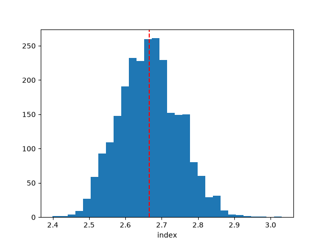
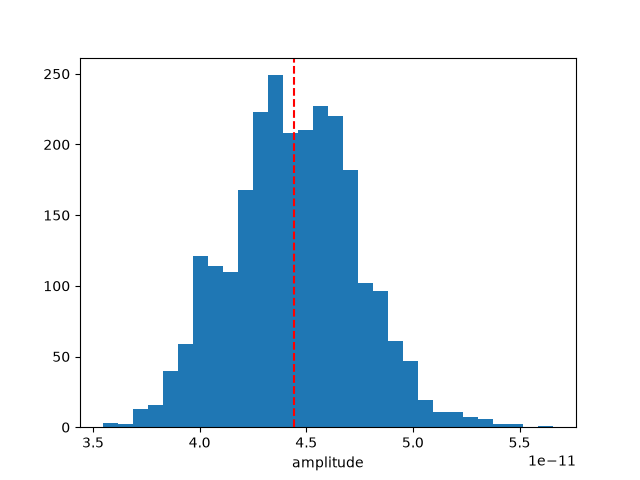
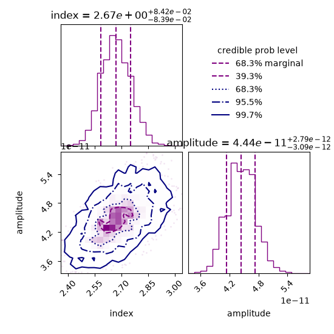
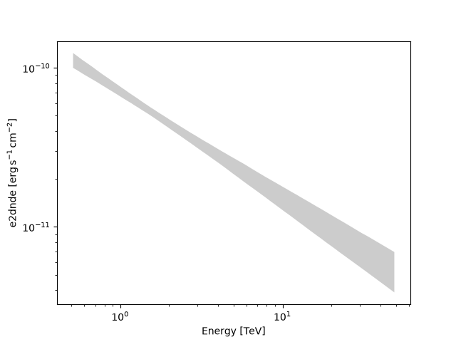

Note
Go to the end to download the full example code or to run this example in your browser via Binder.
Bayesian analysis with nested sampling#
A demonstration of a Bayesian analysis using the nested sampling technique.
Context#
1. Bayesian analysis#
Bayesian inference uses prior knowledge, in the form of a prior distribution, in order to estimate posterior probabilities which we traditionally visualise in the form of corner plots. These distributions contain more information than a maximum likelihood fit as they reveal not only the “best model” but provide a more accurate representation of errors and correlation between parameters. In particular, non-Gaussian degeneracies are complex to estimate with a maximum likelihood approach.
2. Limitations of the Markov Chain Monte Carlo approach#
A well-known approach to estimate this posterior distribution is the Markov Chain Monte Carlo (MCMC). This uses an ensemble of walkers to produce a chain of samples that after a convergence period will reach a stationary state. Once convergence is reached, the successive elements of the chain are samples of the target posterior distribution. However, the weakness of the MCMC approach lies in the “Once convergence” part. If the walkers are started far from the best likelihood region, the convergence time can be long or never reached if the walkers fall in a local minima. The choice of the initialisation point can become critical for complex models with a high number of dimensions and the ability of these walkers to escape a local minimum or to accurately describe a complex likelihood space is not guaranteed.
3. Nested sampling approach#
To overcome these issues, the nested sampling (NS) algorithm has gained traction in physics and astronomy. It is a Monte Carlo algorithm for computing an integral of the likelihood function over the prior model parameter space introduced in Skilling, 2004. The method performs this integral by evolving a collection of points through the parameter space (see recent reviews from Ashton et al., 2022, and Buchner, 2023). Without going into too many details, one important specificity of the NS method is that it starts from the entire parameter space and evolves a collection of live points to map all minima (including multiple modes if any), whereas Markov Chain Monte Carlo methods require an initialisation point and the walkers will explore the local likelihood. The ability of these walkers to escape a local minimum or to accurately describe a complex likelihood space is not guaranteed. This is a fundamental difference with MCMC or Minuit which will only ever probe the vicinity along their minimisation paths and do not have an overview of the global likelihood landscape. The analysis using the NS framework is more CPU time consuming than a standard classical fit, but it provides the full posterior distribution for all parameters, which is out of reach with traditional fitting techniques (N*(N-1)/2 contour plots to generate). In addition, it is more robust to the choice of initialisation, requires less human intervention and is therefore readily integrated in pipeline analysis. In Gammapy, we used the NS implementation of the UltraNest package (see here for more information), one of the leading package in Astronomy (already used in Cosmology and in X-rays). For a nice visualisation of the NS method see here : sampling visualisation. And for a tutorial of UltraNest applied to X-ray fitting with concrete examples and questions see : BXA Tutorial.
Note: please cite UltraNest if used for a paper
If you are using the “UltraNest” library for a paper, please follow its citation scheme: Cite UltraNest.
Proposed approach#
In this example, we will perform a Bayesian analysis with multiple 1D spectra of the Crab nebula data and investigate their posterior distributions.
Setup#
As usual, we’ll start with some setup …
import matplotlib.pyplot as plt
import numpy as np
import astropy.units as u
from gammapy.datasets import Datasets
from gammapy.datasets import SpectrumDatasetOnOff
from gammapy.modeling.models import (
SkyModel,
UniformPrior,
LogUniformPrior,
)
from gammapy.modeling.sampler import Sampler
Loading the spectral datasets#
Here we will load a few Crab 1D spectral data for which we will do a fit.
Model definition#
Now we want to define the spectral model that will be fitted to the data. The Crab spectra will be fitted here with a simple powerlaw for simplicity.
model = SkyModel.create(spectral_model="pl", name="crab")
Warning
Priors definition: Unlike a traditional fit where priors on the parameters are optional, here it is inherent to the Bayesian approach and are therefore mandatory.
In this case we will set (min,max) prior that will define the
boundaries in which the sampling will be performed.
Note that it is usually recommended to use a LogUniformPrior for
the parameters that have a large amplitude range like the
amplitude parameter.
A UniformPrior means that the samples will be drawn with uniform
probability between the (min,max) values in the linear or log space
in the case of a LogUniformPrior.
model.spectral_model.amplitude.prior = LogUniformPrior(min=1e-12, max=1e-10)
model.spectral_model.index.prior = UniformPrior(min=1, max=5)
datasets.models = [model]
print(datasets.models)
DatasetModels
Component 0: SkyModel
Name : crab
Datasets names : None
Spectral model type : PowerLawSpectralModel
Spatial model type :
Temporal model type :
Parameters:
index : 2.000 +/- 0.00
amplitude : 1.00e-12 +/- 0.0e+00 1 / (TeV s cm2)
reference (frozen): 1.000 TeV
Defining the sampler and options#
As for the Fit object, the Sampler object can receive
different backend (although just one is available for now).
The Sampler comes with “reasonable” default parameters, but you can
change them via the sampler_opts dictionary.
Here is a short description of the most relevant parameters that you
could change :
live_points: minimum number of live points throughout the run. More points allow to discover multiple peaks if existing, but is slower. To test the Prior boundaries and for debugging, a lower number (~100) can be used before a production run with more points (~400 or more).frac_remain: the cut-off condition for the integration, set by the maximum allowed fraction of posterior mass left in the live points vs the dead points. High values (e.g., 0.5) are faster and can be used if the posterior distribution is a relatively simple shape. A low value (1e-1, 1e-2) is optimal for finding peaks, but slower.log_dir: directory where the output files will be stored. If set to None, no files will be written. If set to a string, a directory will be created containing the ongoing status of the run and final results. For time consuming analysis, it is highly recommended to use that option to monitor the run and restart it in case of a crash (withresume=True).
Important note: unlike the MCMC method, you don’t need to define the number of steps for which the sampler will run. The algorithm will automatically stop once a convergence criteria has been reached.
sampler_opts = {
"live_points": 300,
"frac_remain": 0.3,
"log_dir": None,
}
sampler = Sampler(backend="ultranest", sampler_opts=sampler_opts)
Next we can run the sampler on a given dataset. No options are accepted in the run method.
[ultranest] Sampling 300 live points from prior ...
Mono-modal Volume: ~exp(-4.09) * Expected Volume: exp(0.00) Quality: ok
index : +1.0|************************** *********************| +5.0
amplitude: +1.0e-12|*********************** ******** ******** *** *| +1.0e-10
Z=-inf(0.00%) | Like=-2427.85..-60.13 [-2427.8459..-305.1810] | it/evals=0/301 eff=0.0000% N=300
Z=-546.6(0.00%) | Like=-540.63..-60.13 [-2427.8459..-305.1810] | it/evals=21/323 eff=91.3043% N=300
Z=-526.1(0.00%) | Like=-520.16..-60.13 [-2427.8459..-305.1810] | it/evals=30/333 eff=90.9091% N=300
Z=-510.7(0.00%) | Like=-504.36..-60.13 [-2427.8459..-305.1810] | it/evals=47/355 eff=85.4545% N=300
Z=-488.7(0.00%) | Like=-482.51..-60.13 [-2427.8459..-305.1810] | it/evals=60/369 eff=86.9565% N=300
Mono-modal Volume: ~exp(-4.36) * Expected Volume: exp(-0.22) Quality: ok
index : +1.0|************************************************| +5.0
amplitude: +1.0e-12|********************************************* *| +1.0e-10
Z=-478.7(0.00%) | Like=-472.84..-60.13 [-2427.8459..-305.1810] | it/evals=67/377 eff=87.0130% N=300
Z=-460.8(0.00%) | Like=-454.73..-60.13 [-2427.8459..-305.1810] | it/evals=85/399 eff=85.8586% N=300
Z=-457.3(0.00%) | Like=-451.25..-60.13 [-2427.8459..-305.1810] | it/evals=90/405 eff=85.7143% N=300
Z=-440.0(0.00%) | Like=-434.62..-60.13 [-2427.8459..-305.1810] | it/evals=107/427 eff=84.2520% N=300
Z=-427.6(0.00%) | Like=-419.53..-60.13 [-2427.8459..-305.1810] | it/evals=120/442 eff=84.5070% N=300
Mono-modal Volume: ~exp(-4.36) Expected Volume: exp(-0.45) Quality: ok
index : +1.0|************************************************| +5.0
amplitude: +1.0e-12|********************************************* *| +1.0e-10
Z=-411.2(0.00%) | Like=-405.56..-60.13 [-2427.8459..-305.1810] | it/evals=134/462 eff=82.7160% N=300
Z=-394.7(0.00%) | Like=-382.46..-60.13 [-2427.8459..-305.1810] | it/evals=150/480 eff=83.3333% N=300
Z=-360.7(0.00%) | Like=-353.31..-60.13 [-2427.8459..-305.1810] | it/evals=168/502 eff=83.1683% N=300
Z=-351.2(0.00%) | Like=-345.57..-60.13 [-2427.8459..-305.1810] | it/evals=180/514 eff=84.1121% N=300
Z=-338.1(0.00%) | Like=-330.08..-60.13 [-2427.8459..-305.1810] | it/evals=195/536 eff=82.6271% N=300
Mono-modal Volume: ~exp(-4.58) * Expected Volume: exp(-0.67) Quality: ok
index : +1.0| **********************************************| +5.0
amplitude: +1.0e-12| ********************************************* *| +1.0e-10
Z=-331.7(0.00%) | Like=-324.66..-60.13 [-2427.8459..-305.1810] | it/evals=201/544 eff=82.3770% N=300
Z=-319.8(0.00%) | Like=-313.13..-59.82 [-2427.8459..-305.1810] | it/evals=210/554 eff=82.6772% N=300
Z=-293.8(0.00%) | Like=-287.88..-59.82 [-304.3083..-168.3970] | it/evals=230/577 eff=83.0325% N=300
Z=-282.7(0.00%) | Like=-276.79..-59.82 [-304.3083..-168.3970] | it/evals=240/587 eff=83.6237% N=300
Z=-272.8(0.00%) | Like=-266.46..-59.82 [-304.3083..-168.3970] | it/evals=260/609 eff=84.1424% N=300
Mono-modal Volume: ~exp(-4.58) Expected Volume: exp(-0.89) Quality: ok
index : +1.0| *******************************************| +5.0
amplitude: +1.0e-12| **********************************************| +1.0e-10
Z=-262.2(0.00%) | Like=-254.25..-59.82 [-304.3083..-168.3970] | it/evals=270/622 eff=83.8509% N=300
Z=-239.1(0.00%) | Like=-233.04..-59.23 [-304.3083..-168.3970] | it/evals=288/644 eff=83.7209% N=300
Z=-234.2(0.00%) | Like=-228.22..-59.23 [-304.3083..-168.3970] | it/evals=300/663 eff=82.6446% N=300
Z=-226.2(0.00%) | Like=-220.47..-59.23 [-304.3083..-168.3970] | it/evals=313/686 eff=81.0881% N=300
Z=-212.4(0.00%) | Like=-205.72..-59.23 [-304.3083..-168.3970] | it/evals=329/711 eff=80.0487% N=300
Z=-211.8(0.00%) | Like=-205.62..-59.23 [-304.3083..-168.3970] | it/evals=330/713 eff=79.9031% N=300
Mono-modal Volume: ~exp(-5.01) * Expected Volume: exp(-1.12) Quality: ok
index : +1.0| *****************************************| +5.0
amplitude: +1.0e-12| *******************************************| +1.0e-10
Z=-209.1(0.00%) | Like=-202.98..-59.23 [-304.3083..-168.3970] | it/evals=335/723 eff=79.1962% N=300
Z=-199.0(0.00%) | Like=-193.12..-59.23 [-304.3083..-168.3970] | it/evals=354/746 eff=79.3722% N=300
Z=-196.8(0.00%) | Like=-189.95..-59.20 [-304.3083..-168.3970] | it/evals=360/755 eff=79.1209% N=300
Z=-189.0(0.00%) | Like=-181.84..-59.20 [-304.3083..-168.3970] | it/evals=373/777 eff=78.1971% N=300
Z=-184.0(0.00%) | Like=-178.32..-59.20 [-304.3083..-168.3970] | it/evals=386/801 eff=77.0459% N=300
Z=-183.1(0.00%) | Like=-177.45..-59.20 [-304.3083..-168.3970] | it/evals=390/806 eff=77.0751% N=300
Mono-modal Volume: ~exp(-5.15) * Expected Volume: exp(-1.34) Quality: ok
index : +1.0| ************************************ | +5.0
amplitude: +1.0e-12| ***************************************** *| +1.0e-10
Z=-178.9(0.00%) | Like=-173.41..-59.20 [-304.3083..-168.3970] | it/evals=402/822 eff=77.0115% N=300
Z=-176.3(0.00%) | Like=-169.93..-59.20 [-304.3083..-168.3970] | it/evals=416/844 eff=76.4706% N=300
Z=-174.4(0.00%) | Like=-168.09..-59.20 [-168.3413..-116.7777] | it/evals=420/850 eff=76.3636% N=300
Z=-167.0(0.00%) | Like=-160.79..-59.20 [-168.3413..-116.7777] | it/evals=437/872 eff=76.3986% N=300
Z=-163.4(0.00%) | Like=-157.48..-59.20 [-168.3413..-116.7777] | it/evals=450/891 eff=76.1421% N=300
Z=-160.2(0.00%) | Like=-153.12..-59.20 [-168.3413..-116.7777] | it/evals=462/918 eff=74.7573% N=300
Mono-modal Volume: ~exp(-6.05) * Expected Volume: exp(-1.56) Quality: ok
index : +1.0| ********************************* | +5.0
amplitude: +1.0e-12| **************************************** *| +1.0e-10
Z=-157.4(0.00%) | Like=-151.69..-59.20 [-168.3413..-116.7777] | it/evals=469/927 eff=74.8006% N=300
Z=-155.4(0.00%) | Like=-149.37..-59.20 [-168.3413..-116.7777] | it/evals=480/941 eff=74.8830% N=300
Z=-151.1(0.00%) | Like=-144.71..-59.20 [-168.3413..-116.7777] | it/evals=497/964 eff=74.8494% N=300
Z=-147.8(0.00%) | Like=-141.50..-59.20 [-168.3413..-116.7777] | it/evals=510/979 eff=75.1105% N=300
Z=-144.0(0.00%) | Like=-138.14..-59.20 [-168.3413..-116.7777] | it/evals=527/1001 eff=75.1783% N=300
Mono-modal Volume: ~exp(-6.05) Expected Volume: exp(-1.79) Quality: ok
index : +1.0| **************************** +4.1 | +5.0
amplitude: +1.0e-12| *********************************** * | +1.0e-10
Z=-141.5(0.00%) | Like=-135.03..-59.20 [-168.3413..-116.7777] | it/evals=540/1018 eff=75.2089% N=300
Z=-135.7(0.00%) | Like=-129.79..-59.20 [-168.3413..-116.7777] | it/evals=559/1040 eff=75.5405% N=300
Z=-132.9(0.00%) | Like=-126.67..-59.20 [-168.3413..-116.7777] | it/evals=570/1053 eff=75.6972% N=300
Z=-130.5(0.00%) | Like=-124.52..-59.20 [-168.3413..-116.7777] | it/evals=583/1076 eff=75.1289% N=300
Z=-127.2(0.00%) | Like=-120.75..-59.20 [-168.3413..-116.7777] | it/evals=599/1100 eff=74.8750% N=300
Z=-127.0(0.00%) | Like=-120.75..-59.20 [-168.3413..-116.7777] | it/evals=600/1103 eff=74.7198% N=300
Mono-modal Volume: ~exp(-6.10) * Expected Volume: exp(-2.01) Quality: ok
index : +1.0| ************************* +3.8 | +5.0
amplitude: +1.0e-12| ********************************* | +1.0e-10
Z=-126.0(0.00%) | Like=-119.49..-59.20 [-168.3413..-116.7777] | it/evals=603/1106 eff=74.8139% N=300
Z=-122.8(0.00%) | Like=-116.67..-59.20 [-116.7512..-87.2194] | it/evals=617/1129 eff=74.4270% N=300
Z=-121.0(0.00%) | Like=-114.47..-59.20 [-116.7512..-87.2194] | it/evals=630/1148 eff=74.2925% N=300
Z=-118.3(0.00%) | Like=-111.95..-59.20 [-116.7512..-87.2194] | it/evals=645/1173 eff=73.8832% N=300
Z=-115.8(0.00%) | Like=-109.70..-59.20 [-116.7512..-87.2194] | it/evals=660/1198 eff=73.4967% N=300
Mono-modal Volume: ~exp(-6.62) * Expected Volume: exp(-2.23) Quality: ok
index : +1.0| +2.0 ********************** +3.7 | +5.0
amplitude: +1.0e-12| ***************************** | +1.0e-10
Z=-113.8(0.00%) | Like=-106.40..-59.20 [-116.7512..-87.2194] | it/evals=670/1212 eff=73.4649% N=300
Z=-109.5(0.00%) | Like=-103.18..-59.20 [-116.7512..-87.2194] | it/evals=688/1235 eff=73.5829% N=300
Z=-109.1(0.00%) | Like=-102.57..-59.20 [-116.7512..-87.2194] | it/evals=690/1239 eff=73.4824% N=300
Z=-106.5(0.00%) | Like=-100.67..-59.20 [-116.7512..-87.2194] | it/evals=707/1261 eff=73.5692% N=300
Z=-105.3(0.00%) | Like=-99.53..-59.20 [-116.7512..-87.2194] | it/evals=720/1282 eff=73.3198% N=300
Mono-modal Volume: ~exp(-6.97) * Expected Volume: exp(-2.46) Quality: ok
index : +1.0| +2.0 ******************* +3.5 | +5.0
amplitude: +1.0e-12| *************************** +7.6e-11 | +1.0e-10
Z=-103.8(0.00%) | Like=-97.63..-59.20 [-116.7512..-87.2194] | it/evals=737/1302 eff=73.5529% N=300
Z=-102.2(0.00%) | Like=-96.37..-59.20 [-116.7512..-87.2194] | it/evals=750/1320 eff=73.5294% N=300
Z=-100.4(0.00%) | Like=-94.30..-59.20 [-116.7512..-87.2194] | it/evals=768/1343 eff=73.6337% N=300
Z=-99.2(0.00%) | Like=-93.22..-58.95 [-116.7512..-87.2194] | it/evals=780/1367 eff=73.1022% N=300
Z=-98.1(0.00%) | Like=-92.28..-58.95 [-116.7512..-87.2194] | it/evals=792/1390 eff=72.6606% N=300
Mono-modal Volume: ~exp(-6.97) Expected Volume: exp(-2.68) Quality: ok
index : +1.0| +2.1 ***************** +3.4 | +5.0
amplitude: +1.0e-12| +2.5e-11 ************************ +7.2e-11 | +1.0e-10
Z=-96.8(0.00%) | Like=-90.39..-58.95 [-116.7512..-87.2194] | it/evals=804/1411 eff=72.3672% N=300
Z=-95.9(0.00%) | Like=-89.47..-58.95 [-116.7512..-87.2194] | it/evals=810/1423 eff=72.1282% N=300
Z=-94.0(0.00%) | Like=-87.99..-58.95 [-116.7512..-87.2194] | it/evals=829/1446 eff=72.3386% N=300
Z=-93.0(0.00%) | Like=-86.99..-58.95 [-87.2083..-74.1517] | it/evals=840/1459 eff=72.4763% N=300
Z=-91.7(0.00%) | Like=-85.66..-58.95 [-87.2083..-74.1517] | it/evals=857/1483 eff=72.4429% N=300
Z=-90.5(0.00%) | Like=-84.35..-58.95 [-87.2083..-74.1517] | it/evals=870/1500 eff=72.5000% N=300
Mono-modal Volume: ~exp(-6.97) Expected Volume: exp(-2.90) Quality: ok
index : +1.0| +2.2 **************** +3.4 | +5.0
amplitude: +1.0e-12| +2.6e-11 ********************** +6.9e-11 | +1.0e-10
Z=-89.7(0.00%) | Like=-83.69..-58.95 [-87.2083..-74.1517] | it/evals=881/1522 eff=72.0949% N=300
Z=-88.6(0.00%) | Like=-82.70..-58.95 [-87.2083..-74.1517] | it/evals=896/1546 eff=71.9101% N=300
Z=-88.4(0.00%) | Like=-82.38..-58.95 [-87.2083..-74.1517] | it/evals=900/1550 eff=72.0000% N=300
Z=-87.1(0.00%) | Like=-80.86..-58.95 [-87.2083..-74.1517] | it/evals=916/1573 eff=71.9560% N=300
Z=-86.0(0.00%) | Like=-79.66..-58.95 [-87.2083..-74.1517] | it/evals=930/1593 eff=71.9258% N=300
Mono-modal Volume: ~exp(-7.44) * Expected Volume: exp(-3.13) Quality: ok
index : +1.0| +2.2 ************** +3.3 | +5.0
amplitude: +1.0e-12| +2.8e-11 ******************** +6.6e-11 | +1.0e-10
Z=-85.4(0.00%) | Like=-79.11..-58.95 [-87.2083..-74.1517] | it/evals=938/1607 eff=71.7674% N=300
Z=-84.3(0.00%) | Like=-78.29..-58.95 [-87.2083..-74.1517] | it/evals=955/1630 eff=71.8045% N=300
Z=-84.0(0.00%) | Like=-77.95..-58.95 [-87.2083..-74.1517] | it/evals=960/1637 eff=71.8025% N=300
Z=-82.8(0.00%) | Like=-76.71..-58.78 [-87.2083..-74.1517] | it/evals=978/1659 eff=71.9647% N=300
Z=-82.1(0.00%) | Like=-75.88..-58.78 [-87.2083..-74.1517] | it/evals=990/1677 eff=71.8954% N=300
Mono-modal Volume: ~exp(-7.74) * Expected Volume: exp(-3.35) Quality: ok
index : +1.0| +2.3 ************ +3.2 | +5.0
amplitude: +1.0e-12| +3.0e-11 ****************** +6.4e-11 | +1.0e-10
Z=-81.4(0.00%) | Like=-75.14..-58.78 [-87.2083..-74.1517] | it/evals=1005/1698 eff=71.8884% N=300
Z=-80.6(0.00%) | Like=-74.53..-58.78 [-87.2083..-74.1517] | it/evals=1020/1719 eff=71.8816% N=300
Z=-80.0(0.00%) | Like=-74.20..-58.78 [-87.2083..-74.1517] | it/evals=1033/1742 eff=71.6366% N=300
Z=-79.5(0.00%) | Like=-73.65..-58.78 [-74.1224..-66.0817] | it/evals=1049/1765 eff=71.6041% N=300
Z=-79.4(0.00%) | Like=-73.64..-58.78 [-74.1224..-66.0817] | it/evals=1050/1769 eff=71.4772% N=300
Z=-78.9(0.00%) | Like=-73.17..-58.78 [-74.1224..-66.0817] | it/evals=1067/1791 eff=71.5627% N=300
Mono-modal Volume: ~exp(-7.75) * Expected Volume: exp(-3.57) Quality: ok
index : +1.0| +2.3 *********** +3.1 | +5.0
amplitude: +1.0e-12| +3.1e-11 **************** +6.1e-11 | +1.0e-10
Z=-78.8(0.00%) | Like=-72.71..-58.78 [-74.1224..-66.0817] | it/evals=1072/1800 eff=71.4667% N=300
Z=-78.4(0.00%) | Like=-72.24..-58.78 [-74.1224..-66.0817] | it/evals=1080/1810 eff=71.5232% N=300
Z=-77.5(0.00%) | Like=-71.06..-58.78 [-74.1224..-66.0817] | it/evals=1100/1832 eff=71.8016% N=300
Z=-77.0(0.00%) | Like=-70.63..-58.78 [-74.1224..-66.0817] | it/evals=1110/1846 eff=71.7982% N=300
Z=-76.2(0.00%) | Like=-69.89..-58.78 [-74.1224..-66.0817] | it/evals=1128/1869 eff=71.8929% N=300
Mono-modal Volume: ~exp(-7.87) * Expected Volume: exp(-3.80) Quality: ok
index : +1.0| +2.3 *********** +3.1 | +5.0
amplitude: +1.0e-12| +3.2e-11 *************** +5.9e-11 | +1.0e-10
Z=-75.8(0.00%) | Like=-69.58..-58.78 [-74.1224..-66.0817] | it/evals=1139/1888 eff=71.7254% N=300
Z=-75.7(0.00%) | Like=-69.57..-58.78 [-74.1224..-66.0817] | it/evals=1140/1889 eff=71.7432% N=300
Z=-75.1(0.00%) | Like=-68.76..-58.78 [-74.1224..-66.0817] | it/evals=1158/1913 eff=71.7917% N=300
Z=-74.7(0.01%) | Like=-68.38..-58.78 [-74.1224..-66.0817] | it/evals=1170/1927 eff=71.9115% N=300
Z=-74.1(0.01%) | Like=-67.95..-58.78 [-74.1224..-66.0817] | it/evals=1187/1953 eff=71.8088% N=300
Z=-73.8(0.01%) | Like=-67.67..-58.78 [-74.1224..-66.0817] | it/evals=1199/1976 eff=71.5394% N=300
Z=-73.7(0.02%) | Like=-67.67..-58.78 [-74.1224..-66.0817] | it/evals=1200/1977 eff=71.5564% N=300
Mono-modal Volume: ~exp(-8.50) * Expected Volume: exp(-4.02) Quality: ok
index : +1.0| +2.4 ********* +3.0 | +5.0
amplitude: +1.0e-12| +3.3e-11 ************* +5.7e-11 | +1.0e-10
Z=-73.6(0.02%) | Like=-67.31..-58.78 [-74.1224..-66.0817] | it/evals=1206/1987 eff=71.4878% N=300
Z=-72.9(0.03%) | Like=-66.57..-58.78 [-74.1224..-66.0817] | it/evals=1226/2009 eff=71.7379% N=300
Z=-72.8(0.04%) | Like=-66.37..-58.78 [-74.1224..-66.0817] | it/evals=1230/2015 eff=71.7201% N=300
Z=-72.3(0.06%) | Like=-66.03..-58.77 [-66.0797..-65.2946] | it/evals=1247/2037 eff=71.7904% N=300
Z=-72.0(0.09%) | Like=-65.84..-58.77 [-66.0797..-65.2946] | it/evals=1260/2054 eff=71.8358% N=300
Mono-modal Volume: ~exp(-8.50) Expected Volume: exp(-4.24) Quality: ok
index : +1.0| +2.4 ********* +3.0 | +5.0
amplitude: +1.0e-12| +3.4e-11 *********** +5.6e-11 | +1.0e-10
Z=-71.7(0.12%) | Like=-65.57..-58.77 [-66.0797..-65.2946] | it/evals=1274/2075 eff=71.7746% N=300
Z=-71.3(0.17%) | Like=-65.00..-58.77 [-65.0149..-65.0024] | it/evals=1290/2097 eff=71.7863% N=300
Z=-70.9(0.26%) | Like=-64.70..-58.77 [-64.6995..-64.6906]*| it/evals=1307/2119 eff=71.8527% N=300
Z=-70.6(0.34%) | Like=-64.49..-58.77 [-64.5149..-64.4891] | it/evals=1320/2141 eff=71.7002% N=300
Z=-70.3(0.46%) | Like=-64.15..-58.77 [-64.1538..-64.1284] | it/evals=1337/2163 eff=71.7660% N=300
Mono-modal Volume: ~exp(-8.58) * Expected Volume: exp(-4.47) Quality: ok
index : +1.0| +2.4 ******** +3.0 | +5.0
amplitude: +1.0e-12| +3.5e-11 *********** +5.5e-11 | +1.0e-10
Z=-70.3(0.49%) | Like=-64.09..-58.77 [-64.1244..-64.0944] | it/evals=1340/2166 eff=71.8114% N=300
Z=-70.1(0.59%) | Like=-63.96..-58.77 [-63.9571..-63.9531]*| it/evals=1350/2181 eff=71.7703% N=300
Z=-69.8(0.79%) | Like=-63.66..-58.77 [-63.6849..-63.6612] | it/evals=1368/2203 eff=71.8865% N=300
Z=-69.6(0.96%) | Like=-63.53..-58.77 [-63.5260..-63.5222]*| it/evals=1380/2224 eff=71.7256% N=300
Z=-69.4(1.16%) | Like=-63.26..-58.77 [-63.2728..-63.2614] | it/evals=1394/2248 eff=71.5606% N=300
Mono-modal Volume: ~exp(-9.13) * Expected Volume: exp(-4.69) Quality: ok
index : +1.0| +2.4 ******* +2.9 | +5.0
amplitude: +1.0e-12| +3.6e-11 ********** +5.3e-11 | +1.0e-10
Z=-69.2(1.41%) | Like=-63.19..-58.77 [-63.1882..-63.1835]*| it/evals=1407/2267 eff=71.5302% N=300
Z=-69.2(1.47%) | Like=-63.16..-58.77 [-63.1828..-63.1586] | it/evals=1410/2271 eff=71.5373% N=300
Z=-69.0(1.86%) | Like=-62.84..-58.77 [-62.8744..-62.8402] | it/evals=1428/2294 eff=71.6148% N=300
Z=-68.8(2.16%) | Like=-62.73..-58.77 [-62.7264..-62.7224]*| it/evals=1440/2308 eff=71.7131% N=300
Z=-68.6(2.65%) | Like=-62.48..-58.77 [-62.5258..-62.4762] | it/evals=1458/2330 eff=71.8227% N=300
Z=-68.5(2.97%) | Like=-62.30..-58.77 [-62.2976..-62.2681] | it/evals=1470/2353 eff=71.6025% N=300
Mono-modal Volume: ~exp(-9.17) * Expected Volume: exp(-4.91) Quality: ok
index : +1.0| +2.5 ****** +2.9 | +5.0
amplitude: +1.0e-12| +3.7e-11 ******** +5.2e-11 | +1.0e-10
Z=-68.4(3.09%) | Like=-62.22..-58.77 [-62.2565..-62.2216] | it/evals=1474/2359 eff=71.5881% N=300
Z=-68.2(3.96%) | Like=-61.99..-58.77 [-61.9923..-61.9882]*| it/evals=1494/2383 eff=71.7235% N=300
Z=-68.1(4.20%) | Like=-61.95..-58.77 [-61.9489..-61.9340] | it/evals=1500/2391 eff=71.7360% N=300
Z=-68.0(4.91%) | Like=-61.79..-58.77 [-61.7917..-61.7820]*| it/evals=1515/2415 eff=71.6312% N=300
Z=-67.8(5.64%) | Like=-61.69..-58.77 [-61.6939..-61.6928]*| it/evals=1530/2438 eff=71.5622% N=300
Mono-modal Volume: ~exp(-9.17) Expected Volume: exp(-5.14) Quality: ok
index : +1.0| +2.5 ****** +2.9 | +5.0
amplitude: +1.0e-12| +3.8e-11 ******** +5.2e-11 | +1.0e-10
Z=-67.7(6.68%) | Like=-61.49..-58.77 [-61.4859..-61.4846]*| it/evals=1548/2459 eff=71.6999% N=300
Z=-67.5(7.49%) | Like=-61.38..-58.77 [-61.3795..-61.3578] | it/evals=1560/2475 eff=71.7241% N=300
Z=-67.4(8.63%) | Like=-61.24..-58.77 [-61.2587..-61.2441] | it/evals=1576/2499 eff=71.6689% N=300
Z=-67.3(9.68%) | Like=-61.11..-58.77 [-61.1390..-61.1141] | it/evals=1590/2516 eff=71.7509% N=300
Z=-67.2(10.47%) | Like=-61.02..-58.77 [-61.0228..-61.0201]*| it/evals=1602/2539 eff=71.5498% N=300
Mono-modal Volume: ~exp(-9.58) * Expected Volume: exp(-5.36) Quality: ok
index : +1.0| +2.5 ***** +2.8 | +5.0
amplitude: +1.0e-12| +3.8e-11 ******* +5.1e-11 | +1.0e-10
Z=-67.2(10.98%) | Like=-60.99..-58.77 [-60.9876..-60.9841]*| it/evals=1608/2548 eff=71.5302% N=300
Z=-67.1(11.90%) | Like=-60.91..-58.76 [-60.9053..-60.9035]*| it/evals=1620/2563 eff=71.5864% N=300
Z=-66.9(13.63%) | Like=-60.80..-58.76 [-60.7983..-60.7933]*| it/evals=1641/2585 eff=71.8162% N=300
Z=-66.9(14.34%) | Like=-60.71..-58.76 [-60.7053..-60.7041]*| it/evals=1650/2598 eff=71.8016% N=300
Z=-66.8(15.79%) | Like=-60.62..-58.76 [-60.6168..-60.6143]*| it/evals=1667/2624 eff=71.7298% N=300
Mono-modal Volume: ~exp(-9.68) * Expected Volume: exp(-5.58) Quality: ok
index : +1.0| +2.5 **** +2.8 | +5.0
amplitude: +1.0e-12| +3.9e-11 ****** +5.0e-11 | +1.0e-10
Z=-66.7(16.60%) | Like=-60.57..-58.76 [-60.5725..-60.5714]*| it/evals=1675/2639 eff=71.6118% N=300
Z=-66.7(16.99%) | Like=-60.56..-58.76 [-60.5607..-60.5590]*| it/evals=1680/2647 eff=71.5807% N=300
Z=-66.6(18.38%) | Like=-60.45..-58.76 [-60.4542..-60.4356] | it/evals=1694/2671 eff=71.4466% N=300
Z=-66.5(20.06%) | Like=-60.36..-58.76 [-60.3637..-60.3631]*| it/evals=1710/2693 eff=71.4584% N=300
Z=-66.4(21.72%) | Like=-60.26..-58.76 [-60.2629..-60.2615]*| it/evals=1726/2720 eff=71.3223% N=300
Z=-66.4(23.18%) | Like=-60.20..-58.76 [-60.2016..-60.2014]*| it/evals=1740/2742 eff=71.2531% N=300
Mono-modal Volume: ~exp(-9.99) * Expected Volume: exp(-5.81) Quality: ok
index : +1.0| +2.5 **** +2.8 | +5.0
amplitude: +1.0e-12| +3.9e-11 ****** +5.0e-11 | +1.0e-10
Z=-66.4(23.43%) | Like=-60.20..-58.76 [-60.2011..-60.1930]*| it/evals=1742/2745 eff=71.2474% N=300
Z=-66.3(25.96%) | Like=-60.12..-58.76 [-60.1154..-60.1141]*| it/evals=1763/2767 eff=71.4633% N=300
Z=-66.2(26.68%) | Like=-60.06..-58.76 [-60.0621..-60.0603]*| it/evals=1770/2775 eff=71.5152% N=300
Z=-66.2(28.37%) | Like=-60.02..-58.75 [-60.0331..-60.0228] | it/evals=1784/2798 eff=71.4171% N=300
Z=-66.1(30.20%) | Like=-59.94..-58.75 [-59.9384..-59.9341]*| it/evals=1800/2818 eff=71.4853% N=300
Mono-modal Volume: ~exp(-9.99) Expected Volume: exp(-6.03) Quality: ok
index : +1.0| +2.5 **** +2.8 | +5.0
amplitude: +1.0e-12| +4.0e-11 ****** +4.9e-11 | +1.0e-10
Z=-66.1(31.63%) | Like=-59.88..-58.75 [-59.8829..-59.8819]*| it/evals=1812/2839 eff=71.3667% N=300
Z=-66.0(33.46%) | Like=-59.82..-58.75 [-59.8211..-59.8200]*| it/evals=1827/2862 eff=71.3115% N=300
Z=-66.0(33.83%) | Like=-59.81..-58.75 [-59.8148..-59.8113]*| it/evals=1830/2865 eff=71.3450% N=300
Z=-65.9(35.72%) | Like=-59.77..-58.75 [-59.7716..-59.7676]*| it/evals=1845/2888 eff=71.2906% N=300
Z=-65.9(37.05%) | Like=-59.73..-58.75 [-59.7251..-59.7244]*| it/evals=1856/2911 eff=71.0839% N=300
Z=-65.9(37.54%) | Like=-59.72..-58.75 [-59.7209..-59.7192]*| it/evals=1860/2915 eff=71.1281% N=300
Mono-modal Volume: ~exp(-10.19) * Expected Volume: exp(-6.25) Quality: ok
index : +1.0| +2.6 **** +2.8 | +5.0
amplitude: +1.0e-12| +4.0e-11 ***** +4.9e-11 | +1.0e-10
Z=-65.8(39.44%) | Like=-59.66..-58.75 [-59.6603..-59.6584]*| it/evals=1876/2938 eff=71.1145% N=300
Z=-65.8(41.09%) | Like=-59.62..-58.75 [-59.6192..-59.6162]*| it/evals=1890/2955 eff=71.1864% N=300
Z=-65.8(42.83%) | Like=-59.56..-58.75 [-59.5593..-59.5590]*| it/evals=1905/2977 eff=71.1617% N=300
Z=-65.7(44.69%) | Like=-59.51..-58.75 [-59.5102..-59.5086]*| it/evals=1920/2999 eff=71.1375% N=300
Z=-65.7(46.64%) | Like=-59.47..-58.75 [-59.4695..-59.4658]*| it/evals=1936/3021 eff=71.1503% N=300
Mono-modal Volume: ~exp(-10.59) * Expected Volume: exp(-6.48) Quality: ok
index : +1.0| +2.6 **** +2.8 | +5.0
amplitude: +1.0e-12| +4.1e-11 **** +4.8e-11 | +1.0e-10
Z=-65.7(47.56%) | Like=-59.46..-58.75 [-59.4589..-59.4564]*| it/evals=1943/3028 eff=71.2243% N=300
Z=-65.6(48.38%) | Like=-59.44..-58.75 [-59.4441..-59.4439]*| it/evals=1950/3036 eff=71.2719% N=300
Z=-65.6(50.61%) | Like=-59.40..-58.75 [-59.4032..-59.4024]*| it/evals=1969/3058 eff=71.3923% N=300
Z=-65.6(51.91%) | Like=-59.38..-58.75 [-59.3773..-59.3771]*| it/evals=1980/3071 eff=71.4543% N=300
Z=-65.5(53.89%) | Like=-59.34..-58.75 [-59.3381..-59.3378]*| it/evals=1997/3093 eff=71.5002% N=300
Mono-modal Volume: ~exp(-11.20) * Expected Volume: exp(-6.70) Quality: ok
index : +1.0| +2.6 **** +2.8 | +5.0
amplitude: +1.0e-12| +4.1e-11 **** +4.8e-11 | +1.0e-10
Z=-65.5(55.46%) | Like=-59.31..-58.75 [-59.3144..-59.3128]*| it/evals=2010/3112 eff=71.4794% N=300
Z=-65.5(57.37%) | Like=-59.28..-58.75 [-59.2832..-59.2810]*| it/evals=2028/3135 eff=71.5344% N=300
Z=-65.4(58.72%) | Like=-59.26..-58.75 [-59.2608..-59.2605]*| it/evals=2040/3148 eff=71.6292% N=300
Z=-65.4(60.66%) | Like=-59.23..-58.75 [-59.2321..-59.2293]*| it/evals=2059/3170 eff=71.7422% N=300
Z=-65.4(61.79%) | Like=-59.21..-58.75 [-59.2139..-59.2126]*| it/evals=2070/3183 eff=71.8002% N=300
Mono-modal Volume: ~exp(-11.44) * Expected Volume: exp(-6.92) Quality: ok
index : +1.0| +2.6 ** +2.7 | +5.0
amplitude: +1.0e-12| +4.2e-11 **** +4.7e-11 | +1.0e-10
Z=-65.4(62.47%) | Like=-59.20..-58.75 [-59.2011..-59.1988]*| it/evals=2077/3191 eff=71.8437% N=300
Z=-65.4(64.16%) | Like=-59.18..-58.75 [-59.1766..-59.1741]*| it/evals=2095/3213 eff=71.9190% N=300
Z=-65.4(64.65%) | Like=-59.17..-58.75 [-59.1706..-59.1697]*| it/evals=2100/3219 eff=71.9424% N=300
Z=-65.3(66.35%) | Like=-59.15..-58.75 [-59.1473..-59.1467]*| it/evals=2118/3242 eff=71.9918% N=300
Z=-65.3(67.44%) | Like=-59.13..-58.75 [-59.1321..-59.1320]*| it/evals=2130/3254 eff=72.1056% N=300
Mono-modal Volume: ~exp(-11.47) * Expected Volume: exp(-7.15) Quality: ok
index : +1.0| +2.6 ** +2.7 | +5.0
amplitude: +1.0e-12| +4.2e-11 **** +4.7e-11 | +1.0e-10
Z=-65.3(68.66%) | Like=-59.12..-58.75 [-59.1164..-59.1163]*| it/evals=2144/3272 eff=72.1400% N=300
[ultranest] Explored until L=-6e+01
[ultranest] Likelihood function evaluations: 3294
[ultranest] logZ = -64.89 +- 0.112
[ultranest] Effective samples strategy satisfied (ESS = 997.6, need >400)
[ultranest] Posterior uncertainty strategy is satisfied (KL: 0.46+-0.07 nat, need <0.50 nat)
[ultranest] Evidency uncertainty strategy is satisfied (dlogz=0.29, need <0.5)
[ultranest] logZ error budget: single: 0.13 bs:0.11 tail:0.26 total:0.29 required:<0.50
[ultranest] done iterating.
logZ = -64.914 +- 0.386
single instance: logZ = -64.914 +- 0.131
bootstrapped : logZ = -64.888 +- 0.284
tail : logZ = +- 0.262
insert order U test : converged: True correlation: inf iterations
index : 2.387 │ ▁ ▁▁▁▁▁▂▃▃▅▅▅▇▇▇▇▇▆▇▆▅▄▃▂▂▂▁▁▁▁▁▁▁ ▁ │3.021 2.669 +- 0.084
amplitude : 0.0000000000347│ ▁▁▁▁▁▂▂▃▃▄▅▆▆▆▇▆▆▇▅▅▃▄▃▂▂▁▁▁▁▁▁▁▁▁▁ ▁ │0.0000000000577 0.0000000000444 +- 0.0000000000031
Understanding the outputs#
In the Jupyter notebook, you should be able to see an interactive visualisation of how the parameter space shrinks which starts from the (min,max) shrinks down towards the optimal parameters.
The output above is filled with interesting information. Here we provide a short description of the most relevant information provided above. For more detailed information see the UltraNest docs.
During the sampling
Z=-68.8(0.53%) | Like=-63.96..-58.75 [-63.9570..-63.9539]*| it/evals=640/1068 eff=73.7327% N=300
Some important information here is:
Progress (0.53%): the completed fraction of the integral. This is not a time progress bar. Stays at zero for a good fraction of the run.
Efficiency (eff value) of the sampling: this indicates out of the proposed new points, how many were accepted. If your efficiency is too small (<<1%), maybe you should revise your priors (e.g use a LogUniform prior for the normalisation).
Final outputs
The final lines indicate that all three “convergence” strategies are satisfied (samples, posterior uncertainty, and evidence uncertainty).
logZ = -65.104 +- 0.292
The main goal of the Nested sampling algorithm is to estimate Z (the Bayesian evidence) which is given above together with an uncertainty. In a similar way to deltaLogLike and deltaAIC, deltaLogZ values can be used for model comparison. For more information see : on the use of the evidence for model comparison. An interesting comparison of the efficiency and false discovery rate of model selection with deltaLogLike and deltaLogZ is given in Appendix C of Buchner et al., 2014.
Results stored on disk
if log_dir is set to a name where the results will be stored, then
a directory is created containing many useful results and plots.
A description of these outputs is given in the Ultranest
docs.
Results#
Within a Bayesian analysis, the concept of best-fit has to be viewed differently from what is done in a gradient descent fit.
The output of the Bayesian analysis is the posterior distribution and there is no “best-fit” output. One has to define, based on the posteriors, what we want to consider as “best-fit” and several options are possible:
the mean of the distribution
the median
the lowest likelihood value
By default the DatasetModels will be updated with the mean of
the posterior distributions.
print(result_joint.models)
DatasetModels
Component 0: SkyModel
Name : crab
Datasets names : None
Spectral model type : PowerLawSpectralModel
Spatial model type :
Temporal model type :
Parameters:
index : 2.669 +/- 0.08
amplitude : 4.44e-11 +/- 3.1e-12 1 / (TeV s cm2)
reference (frozen): 1.000 TeV
The Sampler class returns a very rich dictionary.
The most “standard” information about the posterior distributions can
be found in :
print(result_joint.sampler_results["posterior"])
{'mean': [2.6690492489076396, 4.436050624713324e-11], 'stdev': [0.0838986868955019, 3.0615902325485104e-12], 'median': [2.66757749774432, 4.420780473688684e-11], 'errlo': [2.583064341732081, 4.138635380732756e-11], 'errup': [2.749446949614021, 4.734764680406459e-11], 'information_gain_bits': [2.695075157542502, 3.0880768797020064]}
Besides mean, errors, etc, an interesting value is the
information gain which estimates how much the posterior
distribution has shrunk with respect to the prior (i.e. how much
we’ve learned). A value < 1 means that the parameter is poorly
constrained within the prior range (we haven’t learned much with respect to our prior assumption).
For a physical example see this
example.
The SamplerResult dictionary contains also other interesting
information :
print(result_joint.sampler_results.keys())
dict_keys(['niter', 'logz', 'logzerr', 'logz_bs', 'logz_single', 'logzerr_tail', 'logzerr_bs', 'ess', 'H', 'Herr', 'posterior', 'weighted_samples', 'samples', 'maximum_likelihood', 'ncall', 'paramnames', 'logzerr_single', 'insertion_order_MWW_test'])
Of particular interest, the samples used in the process to approximate the posterior distribution can be accessed via :
for i, n in enumerate(model.parameters.free_parameters.names):
s = result_joint.samples[:, i]
fig, ax = plt.subplots()
ax.hist(s, bins=30)
ax.axvline(np.mean(s), ls="--", color="red")
ax.set_xlabel(n)
plt.show()


While the above plots are interesting, the real strength of the Bayesian analysis is to visualise all parameters correlations which is usually done using “corner plots”. Ultranest corner plot function is a wrapper around the corner package. See the above link for optional keywords. Other packages exist for corner plots, like chainconsumer which is discussed later in this tutorial.
from ultranest.plot import cornerplot
cornerplot(
result_joint.sampler_results,
plot_datapoints=True,
plot_density=True,
bins=20,
title_fmt=".2e",
smooth=False,
)
plt.show()

Spectral model error band from samples#
To compute the spectral error band (“butterfly plots”), we will directly use the samples of the posterior distribution. This is more robust as compared to the traditional method of using the covariance matrix of the parameters which implicitly assumes Gaussian errors while for the posterior distribution there is no shape assumed. This difference can become significant when the parameter errors are non-Gaussian. For this we will need to convert the list of samples back to the spectral model parameters with the relevant units (e.g. normalisation units).
def get_samples_from_posterior(spectral_model, results):
"""
Create a list of spectral parameters with correct units
from the unitless parameters returned by the sampler.
"""
n_samples = results.samples.shape[0]
samples = []
for p in spectral_model.parameters:
try:
idx = spectral_model.parameters.free_unique_parameters.index(p)
samples.append(results.samples[:, idx] * p.unit)
except ValueError:
samples.append(np.ones(n_samples) * p.quantity)
return samples
samples = get_samples_from_posterior(datasets.models[0].spectral_model, result_joint)
Next we can provide these samples to the plot_error
method.

Individual run analysis#
Now we’ll analyse several Crab runs individually so that we can compare them.
result_0 = sampler.run(datasets[0])
result_1 = sampler.run(datasets[1])
result_2 = sampler.run(datasets[2])
[ultranest] Sampling 300 live points from prior ...
Mono-modal Volume: ~exp(-3.84) * Expected Volume: exp(0.00) Quality: ok
index : +1.0|************************************************| +5.0
amplitude: +1.0e-12|****************************** ***** **** ** ***| +1.0e-10
Z=-inf(0.00%) | Like=-1921.32..-21.37 [-1921.3218..-108.1388] | it/evals=0/301 eff=0.0000% N=300
Z=-175.8(0.00%) | Like=-169.64..-21.37 [-1921.3218..-108.1388] | it/evals=30/337 eff=81.0811% N=300
Z=-162.4(0.00%) | Like=-157.84..-21.37 [-1921.3218..-108.1388] | it/evals=60/376 eff=78.9474% N=300
Mono-modal Volume: ~exp(-3.92) * Expected Volume: exp(-0.22) Quality: ok
index : +1.0|************************************************| +5.0
amplitude: +1.0e-12|************************************ **** ** ***| +1.0e-10
Z=-160.5(0.00%) | Like=-155.13..-21.37 [-1921.3218..-108.1388] | it/evals=67/384 eff=79.7619% N=300
Z=-152.7(0.00%) | Like=-147.00..-21.37 [-1921.3218..-108.1388] | it/evals=90/408 eff=83.3333% N=300
Z=-143.1(0.00%) | Like=-137.69..-21.37 [-1921.3218..-108.1388] | it/evals=120/446 eff=82.1918% N=300
Mono-modal Volume: ~exp(-4.67) * Expected Volume: exp(-0.45) Quality: ok
index : +1.0| ***********************************************| +5.0
amplitude: +1.0e-12|************************************ ** * ** ***| +1.0e-10
Z=-133.0(0.00%) | Like=-128.20..-21.37 [-1921.3218..-108.1388] | it/evals=134/463 eff=82.2086% N=300
Z=-128.8(0.00%) | Like=-123.78..-21.37 [-1921.3218..-108.1388] | it/evals=150/481 eff=82.8729% N=300
Z=-122.2(0.00%) | Like=-117.41..-21.37 [-1921.3218..-108.1388] | it/evals=180/518 eff=82.5688% N=300
Mono-modal Volume: ~exp(-4.99) * Expected Volume: exp(-0.67) Quality: ok
index : +1.0| **********************************************| +5.0
amplitude: +1.0e-12| ************************************** * ** ** | +1.0e-10
Z=-116.2(0.00%) | Like=-111.01..-20.83 [-1921.3218..-108.1388] | it/evals=201/545 eff=82.0408% N=300
Z=-113.9(0.00%) | Like=-108.73..-20.83 [-1921.3218..-108.1388] | it/evals=210/555 eff=82.3529% N=300
Z=-106.8(0.00%) | Like=-101.77..-20.83 [-107.7958..-66.7962] | it/evals=240/586 eff=83.9161% N=300
Mono-modal Volume: ~exp(-4.99) Expected Volume: exp(-0.89) Quality: ok
index : +1.0| ********************************************| +5.0
amplitude: +1.0e-12| ************************************** * ** ** | +1.0e-10
Z=-99.3(0.00%) | Like=-93.87..-20.83 [-107.7958..-66.7962] | it/evals=269/624 eff=83.0247% N=300
Z=-99.0(0.00%) | Like=-93.71..-20.83 [-107.7958..-66.7962] | it/evals=270/625 eff=83.0769% N=300
Z=-94.0(0.00%) | Like=-89.07..-20.83 [-107.7958..-66.7962] | it/evals=299/666 eff=81.6940% N=300
Z=-93.8(0.00%) | Like=-89.02..-20.83 [-107.7958..-66.7962] | it/evals=300/667 eff=81.7439% N=300
Z=-87.2(0.00%) | Like=-81.73..-20.83 [-107.7958..-66.7962] | it/evals=330/701 eff=82.2943% N=300
Mono-modal Volume: ~exp(-4.99) Expected Volume: exp(-1.12) Quality: ok
index : +1.0| ******************************************| +5.0
amplitude: +1.0e-12| ********************************** ** ** | +1.0e-10
Z=-81.6(0.00%) | Like=-75.99..-20.59 [-107.7958..-66.7962] | it/evals=355/737 eff=81.2357% N=300
Z=-80.6(0.00%) | Like=-75.28..-20.59 [-107.7958..-66.7962] | it/evals=360/743 eff=81.2641% N=300
Z=-75.6(0.00%) | Like=-70.19..-20.59 [-107.7958..-66.7962] | it/evals=390/784 eff=80.5785% N=300
Mono-modal Volume: ~exp(-5.55) * Expected Volume: exp(-1.34) Quality: ok
index : +1.0| *************************************** | +5.0
amplitude: +1.0e-12| ***************************** *** ** | +1.0e-10
Z=-73.9(0.00%) | Like=-68.85..-20.59 [-107.7958..-66.7962] | it/evals=402/802 eff=80.0797% N=300
Z=-71.5(0.00%) | Like=-66.63..-20.59 [-66.7093..-47.4545] | it/evals=420/825 eff=80.0000% N=300
Z=-68.4(0.00%) | Like=-63.06..-20.59 [-66.7093..-47.4545] | it/evals=450/863 eff=79.9290% N=300
Mono-modal Volume: ~exp(-5.55) Expected Volume: exp(-1.56) Quality: ok
index : +1.0| ******************************** | +5.0
amplitude: +1.0e-12| **************************** ** ** +7.8e-11| +1.0e-10
Z=-65.3(0.00%) | Like=-60.19..-20.58 [-66.7093..-47.4545] | it/evals=476/899 eff=79.4658% N=300
Z=-64.9(0.00%) | Like=-59.78..-20.58 [-66.7093..-47.4545] | it/evals=480/908 eff=78.9474% N=300
Z=-62.3(0.00%) | Like=-57.37..-20.58 [-66.7093..-47.4545] | it/evals=510/945 eff=79.0698% N=300
Mono-modal Volume: ~exp(-5.64) * Expected Volume: exp(-1.79) Quality: ok
index : +1.0| ***************************** +4.1 | +5.0
amplitude: +1.0e-12| *************************** ** +7.2e-11 | +1.0e-10
Z=-59.6(0.00%) | Like=-54.32..-20.58 [-66.7093..-47.4545] | it/evals=536/976 eff=79.2899% N=300
Z=-59.2(0.00%) | Like=-53.87..-20.58 [-66.7093..-47.4545] | it/evals=540/980 eff=79.4118% N=300
Z=-56.8(0.00%) | Like=-51.87..-20.58 [-66.7093..-47.4545] | it/evals=567/1023 eff=78.4232% N=300
Z=-56.6(0.00%) | Like=-51.72..-20.58 [-66.7093..-47.4545] | it/evals=570/1028 eff=78.2967% N=300
Z=-55.1(0.00%) | Like=-50.13..-20.58 [-66.7093..-47.4545] | it/evals=596/1072 eff=77.2021% N=300
Z=-54.8(0.00%) | Like=-49.79..-20.58 [-66.7093..-47.4545] | it/evals=600/1078 eff=77.1208% N=300
Mono-modal Volume: ~exp(-6.05) * Expected Volume: exp(-2.01) Quality: ok
index : +1.0| *************************** +3.9 | +5.0
amplitude: +1.0e-12| *************************** * +7.0e-11 | +1.0e-10
Z=-54.6(0.00%) | Like=-49.73..-20.58 [-66.7093..-47.4545] | it/evals=603/1081 eff=77.2087% N=300
Z=-52.5(0.00%) | Like=-47.27..-20.58 [-47.2922..-34.9520] | it/evals=630/1117 eff=77.1114% N=300
Z=-50.5(0.00%) | Like=-45.30..-20.49 [-47.2922..-34.9520] | it/evals=660/1157 eff=77.0128% N=300
Mono-modal Volume: ~exp(-6.30) * Expected Volume: exp(-2.23) Quality: ok
index : +1.0| ************************ +3.7 | +5.0
amplitude: +1.0e-12| ************************** +6.6e-11 | +1.0e-10
Z=-49.9(0.00%) | Like=-44.54..-20.49 [-47.2922..-34.9520] | it/evals=670/1171 eff=76.9231% N=300
Z=-48.7(0.00%) | Like=-43.65..-20.49 [-47.2922..-34.9520] | it/evals=690/1201 eff=76.5816% N=300
Z=-47.3(0.00%) | Like=-42.17..-20.49 [-47.2922..-34.9520] | it/evals=717/1242 eff=76.1146% N=300
Z=-47.1(0.00%) | Like=-42.02..-20.49 [-47.2922..-34.9520] | it/evals=720/1245 eff=76.1905% N=300
Mono-modal Volume: ~exp(-6.30) Expected Volume: exp(-2.46) Quality: ok
index : +1.0| ********************* +3.5 | +5.0
amplitude: +1.0e-12| ************************ +6.2e-11 | +1.0e-10
Z=-45.7(0.00%) | Like=-40.02..-20.49 [-47.2922..-34.9520] | it/evals=740/1283 eff=75.2798% N=300
Z=-45.1(0.00%) | Like=-39.71..-20.49 [-47.2922..-34.9520] | it/evals=750/1301 eff=74.9251% N=300
Z=-44.1(0.00%) | Like=-38.84..-20.49 [-47.2922..-34.9520] | it/evals=770/1344 eff=73.7548% N=300
Z=-43.6(0.00%) | Like=-38.30..-20.49 [-47.2922..-34.9520] | it/evals=780/1357 eff=73.7938% N=300
Mono-modal Volume: ~exp(-6.34) * Expected Volume: exp(-2.68) Quality: ok
index : +1.0| +1.9 ******************* +3.4 | +5.0
amplitude: +1.0e-12| ********************** +6.0e-11 | +1.0e-10
Z=-42.6(0.00%) | Like=-37.52..-20.49 [-47.2922..-34.9520] | it/evals=804/1395 eff=73.4247% N=300
Z=-42.4(0.00%) | Like=-37.25..-20.49 [-47.2922..-34.9520] | it/evals=810/1402 eff=73.5027% N=300
Z=-41.1(0.00%) | Like=-35.11..-20.49 [-47.2922..-34.9520] | it/evals=838/1443 eff=73.3158% N=300
Z=-40.9(0.00%) | Like=-34.97..-20.49 [-47.2922..-34.9520] | it/evals=840/1446 eff=73.2984% N=300
Z=-39.4(0.00%) | Like=-33.79..-20.49 [-34.9304..-28.0743] | it/evals=870/1486 eff=73.3558% N=300
Mono-modal Volume: ~exp(-6.95) * Expected Volume: exp(-2.90) Quality: ok
index : +1.0| +2.0 **************** +3.3 | +5.0
amplitude: +1.0e-12| ******************* +5.6e-11 | +1.0e-10
Z=-39.3(0.00%) | Like=-33.74..-20.49 [-34.9304..-28.0743] | it/evals=871/1487 eff=73.3783% N=300
Z=-38.1(0.00%) | Like=-32.54..-20.49 [-34.9304..-28.0743] | it/evals=900/1523 eff=73.5895% N=300
Z=-36.8(0.00%) | Like=-31.21..-20.49 [-34.9304..-28.0743] | it/evals=930/1563 eff=73.6342% N=300
Mono-modal Volume: ~exp(-7.20) * Expected Volume: exp(-3.13) Quality: ok
index : +1.0| +2.1 *************** +3.2 | +5.0
amplitude: +1.0e-12| ***************** +5.4e-11 | +1.0e-10
Z=-36.5(0.00%) | Like=-30.96..-20.49 [-34.9304..-28.0743] | it/evals=938/1580 eff=73.2812% N=300
Z=-35.7(0.01%) | Like=-30.06..-20.49 [-34.9304..-28.0743] | it/evals=960/1613 eff=73.1150% N=300
Z=-34.8(0.01%) | Like=-29.54..-20.49 [-34.9304..-28.0743] | it/evals=990/1652 eff=73.2249% N=300
Mono-modal Volume: ~exp(-7.20) Expected Volume: exp(-3.35) Quality: ok
index : +1.0| +2.1 ************* +3.1 | +5.0
amplitude: +1.0e-12| **************** +5.1e-11 | +1.0e-10
Z=-34.2(0.03%) | Like=-28.83..-20.49 [-34.9304..-28.0743] | it/evals=1015/1689 eff=73.0742% N=300
Z=-34.1(0.03%) | Like=-28.68..-20.49 [-34.9304..-28.0743] | it/evals=1020/1696 eff=73.0659% N=300
Z=-33.4(0.06%) | Like=-28.01..-20.49 [-28.0700..-27.0034] | it/evals=1047/1737 eff=72.8601% N=300
Z=-33.4(0.06%) | Like=-27.91..-20.49 [-28.0700..-27.0034] | it/evals=1050/1741 eff=72.8661% N=300
Mono-modal Volume: ~exp(-7.62) * Expected Volume: exp(-3.57) Quality: ok
index : +1.0| +2.2 ************* +3.1 | +5.0
amplitude: +1.0e-12| ************** +5.0e-11 | +1.0e-10
Z=-32.9(0.10%) | Like=-27.45..-20.49 [-28.0700..-27.0034] | it/evals=1072/1766 eff=73.1241% N=300
Z=-32.7(0.12%) | Like=-27.29..-20.49 [-28.0700..-27.0034] | it/evals=1080/1776 eff=73.1707% N=300
Z=-32.1(0.21%) | Like=-26.67..-20.49 [-26.6698..-26.6650]*| it/evals=1110/1813 eff=73.3642% N=300
Z=-31.6(0.36%) | Like=-26.13..-20.49 [-26.1301..-26.1070] | it/evals=1138/1853 eff=73.2775% N=300
Mono-modal Volume: ~exp(-7.89) * Expected Volume: exp(-3.80) Quality: ok
index : +1.0| +2.2 *********** +3.0 | +5.0
amplitude: +1.0e-12| ************* +4.8e-11 | +1.0e-10
Z=-31.6(0.36%) | Like=-26.11..-20.49 [-26.1301..-26.1070] | it/evals=1139/1854 eff=73.2947% N=300
Z=-31.6(0.37%) | Like=-26.10..-20.49 [-26.0980..-26.0442] | it/evals=1140/1855 eff=73.3119% N=300
Z=-31.1(0.61%) | Like=-25.55..-20.49 [-25.5460..-25.5262] | it/evals=1168/1897 eff=73.1371% N=300
Z=-31.0(0.63%) | Like=-25.52..-20.49 [-25.5210..-25.5013] | it/evals=1170/1899 eff=73.1707% N=300
Z=-30.6(0.97%) | Like=-25.15..-20.49 [-25.1738..-25.1550] | it/evals=1196/1941 eff=72.8824% N=300
Z=-30.6(1.02%) | Like=-25.09..-20.49 [-25.0852..-25.0487] | it/evals=1200/1945 eff=72.9483% N=300
Mono-modal Volume: ~exp(-7.89) Expected Volume: exp(-4.02) Quality: ok
index : +1.0| +2.2 ********** +3.0 | +5.0
amplitude: +1.0e-12| +2.4e-11 ************ +4.7e-11 | +1.0e-10
Z=-30.2(1.45%) | Like=-24.78..-20.49 [-24.7817..-24.7713] | it/evals=1226/1982 eff=72.8894% N=300
Z=-30.2(1.51%) | Like=-24.75..-20.49 [-24.7620..-24.7502] | it/evals=1230/1991 eff=72.7380% N=300
Z=-29.9(2.09%) | Like=-24.43..-20.49 [-24.4662..-24.4281] | it/evals=1256/2033 eff=72.4755% N=300
Z=-29.8(2.21%) | Like=-24.35..-20.49 [-24.3722..-24.3470] | it/evals=1260/2040 eff=72.4138% N=300
Mono-modal Volume: ~exp(-8.41) * Expected Volume: exp(-4.24) Quality: ok
index : +1.0| +2.2 ********** +2.9 | +5.0
amplitude: +1.0e-12| +2.5e-11 *********** +4.5e-11 | +1.0e-10
Z=-29.7(2.59%) | Like=-24.20..-20.49 [-24.1979..-24.1826] | it/evals=1273/2061 eff=72.2885% N=300
Z=-29.5(3.11%) | Like=-24.01..-20.49 [-24.0149..-24.0122]*| it/evals=1290/2083 eff=72.3500% N=300
Z=-29.2(4.15%) | Like=-23.75..-20.49 [-23.7652..-23.7513] | it/evals=1316/2122 eff=72.2283% N=300
Z=-29.2(4.30%) | Like=-23.69..-20.49 [-23.6912..-23.6777] | it/evals=1320/2126 eff=72.2892% N=300
Mono-modal Volume: ~exp(-8.46) * Expected Volume: exp(-4.47) Quality: ok
index : +1.0| +2.3 ******** +2.9 | +5.0
amplitude: +1.0e-12| +2.6e-11 ********** +4.4e-11 | +1.0e-10
Z=-29.0(5.20%) | Like=-23.51..-20.49 [-23.5132..-23.5120]*| it/evals=1340/2150 eff=72.4324% N=300
Z=-28.9(5.73%) | Like=-23.37..-20.49 [-23.3656..-23.3597]*| it/evals=1350/2165 eff=72.3861% N=300
Z=-28.7(7.18%) | Like=-23.18..-20.49 [-23.1847..-23.1826]*| it/evals=1377/2206 eff=72.2455% N=300
Z=-28.6(7.40%) | Like=-23.16..-20.49 [-23.1801..-23.1598] | it/evals=1380/2209 eff=72.2892% N=300
Mono-modal Volume: ~exp(-8.46) Expected Volume: exp(-4.69) Quality: ok
index : +1.0| +2.3 ******** +2.8 | +5.0
amplitude: +1.0e-12| +2.6e-11 ********* +4.3e-11 | +1.0e-10
Z=-28.4(9.11%) | Like=-22.85..-20.49 [-22.8462..-22.8392]*| it/evals=1408/2246 eff=72.3535% N=300
Z=-28.4(9.27%) | Like=-22.84..-20.49 [-22.8353..-22.8328]*| it/evals=1410/2248 eff=72.3819% N=300
Z=-28.2(11.72%) | Like=-22.59..-20.49 [-22.5881..-22.5872]*| it/evals=1440/2285 eff=72.5441% N=300
Z=-28.0(13.88%) | Like=-22.45..-20.47 [-22.4497..-22.4493]*| it/evals=1465/2327 eff=72.2743% N=300
Z=-28.0(14.35%) | Like=-22.42..-20.47 [-22.4182..-22.4058] | it/evals=1470/2333 eff=72.3069% N=300
Mono-modal Volume: ~exp(-9.07) * Expected Volume: exp(-4.91) Quality: ok
index : +1.0| +2.3 ******* +2.8 | +5.0
amplitude: +1.0e-12| +2.7e-11 ******** +4.2e-11 | +1.0e-10
Z=-27.9(14.66%) | Like=-22.39..-20.47 [-22.4014..-22.3884] | it/evals=1474/2341 eff=72.2195% N=300
Z=-27.8(17.29%) | Like=-22.20..-20.47 [-22.2022..-22.1883] | it/evals=1500/2373 eff=72.3589% N=300
Z=-27.6(20.53%) | Like=-22.04..-20.47 [-22.0375..-22.0298]*| it/evals=1530/2414 eff=72.3746% N=300
Mono-modal Volume: ~exp(-9.16) * Expected Volume: exp(-5.14) Quality: ok
index : +1.0| +2.4 ****** +2.8 | +5.0
amplitude: +1.0e-12| +2.8e-11 ******* +4.1e-11 | +1.0e-10
Z=-27.6(21.66%) | Like=-21.94..-20.47 [-21.9707..-21.9448] | it/evals=1541/2430 eff=72.3474% N=300
Z=-27.5(23.84%) | Like=-21.86..-20.47 [-21.8803..-21.8649] | it/evals=1560/2462 eff=72.1554% N=300
Z=-27.3(27.03%) | Like=-21.76..-20.47 [-21.7649..-21.7531] | it/evals=1586/2505 eff=71.9274% N=300
Z=-27.3(27.47%) | Like=-21.74..-20.47 [-21.7446..-21.7439]*| it/evals=1590/2511 eff=71.9132% N=300
Mono-modal Volume: ~exp(-9.22) * Expected Volume: exp(-5.36) Quality: ok
index : +1.0| +2.4 ****** +2.8 | +5.0
amplitude: +1.0e-12| +2.9e-11 ****** +4.0e-11 | +1.0e-10
Z=-27.2(29.57%) | Like=-21.68..-20.47 [-21.6761..-21.6737]*| it/evals=1608/2535 eff=71.9463% N=300
Z=-27.2(31.15%) | Like=-21.63..-20.47 [-21.6344..-21.6335]*| it/evals=1620/2550 eff=72.0000% N=300
Z=-27.1(34.58%) | Like=-21.55..-20.47 [-21.5453..-21.5411]*| it/evals=1648/2590 eff=71.9651% N=300
Z=-27.1(34.81%) | Like=-21.54..-20.47 [-21.5390..-21.5369]*| it/evals=1650/2592 eff=71.9895% N=300
Mono-modal Volume: ~exp(-9.43) * Expected Volume: exp(-5.58) Quality: ok
index : +1.0| +2.4 ***** +2.7 | +5.0
amplitude: +1.0e-12| +2.9e-11 ****** +3.9e-11 | +1.0e-10
Z=-27.0(37.87%) | Like=-21.45..-20.47 [-21.4464..-21.4403]*| it/evals=1675/2629 eff=71.9193% N=300
Z=-27.0(38.60%) | Like=-21.44..-20.47 [-21.4354..-21.4078] | it/evals=1680/2638 eff=71.8563% N=300
Z=-26.9(41.68%) | Like=-21.33..-20.47 [-21.3339..-21.3326]*| it/evals=1707/2678 eff=71.7830% N=300
Z=-26.9(42.03%) | Like=-21.33..-20.47 [-21.3266..-21.3258]*| it/evals=1710/2684 eff=71.7282% N=300
Z=-26.8(45.48%) | Like=-21.24..-20.47 [-21.2439..-21.2429]*| it/evals=1740/2722 eff=71.8415% N=300
Mono-modal Volume: ~exp(-9.75) * Expected Volume: exp(-5.81) Quality: ok
index : +1.0| +2.4 ***** +2.7 | +5.0
amplitude: +1.0e-12| +3.0e-11 ****** +3.9e-11 | +1.0e-10
Z=-26.8(45.71%) | Like=-21.24..-20.47 [-21.2403..-21.2356]*| it/evals=1742/2724 eff=71.8647% N=300
Z=-26.7(48.96%) | Like=-21.17..-20.47 [-21.1724..-21.1656]*| it/evals=1770/2761 eff=71.9220% N=300
Z=-26.7(52.38%) | Like=-21.09..-20.47 [-21.0937..-21.0936]*| it/evals=1800/2798 eff=72.0576% N=300
Mono-modal Volume: ~exp(-9.85) * Expected Volume: exp(-6.03) Quality: ok
index : +1.0| +2.4 **** +2.7 | +5.0
amplitude: +1.0e-12| +3.0e-11 ***** +3.8e-11 | +1.0e-10
Z=-26.6(53.31%) | Like=-21.07..-20.47 [-21.0721..-21.0717]*| it/evals=1809/2810 eff=72.0717% N=300
Z=-26.6(55.73%) | Like=-21.01..-20.47 [-21.0144..-21.0136]*| it/evals=1830/2837 eff=72.1324% N=300
Z=-26.5(58.91%) | Like=-20.97..-20.47 [-20.9710..-20.9710]*| it/evals=1860/2873 eff=72.2892% N=300
Mono-modal Volume: ~exp(-9.98) * Expected Volume: exp(-6.25) Quality: ok
index : +1.0| +2.4 **** +2.7 | +5.0
amplitude: +1.0e-12| +3.0e-11 **** +3.8e-11 | +1.0e-10
Z=-26.5(60.56%) | Like=-20.94..-20.47 [-20.9387..-20.9360]*| it/evals=1876/2898 eff=72.2094% N=300
Z=-26.5(61.98%) | Like=-20.92..-20.47 [-20.9160..-20.9134]*| it/evals=1890/2921 eff=72.1099% N=300
Z=-26.5(64.96%) | Like=-20.87..-20.46 [-20.8661..-20.8657]*| it/evals=1920/2959 eff=72.2076% N=300
Mono-modal Volume: ~exp(-10.59) * Expected Volume: exp(-6.48) Quality: ok
index : +1.0| +2.5 **** +2.7 | +5.0
amplitude: +1.0e-12| +3.1e-11 **** +3.7e-11 | +1.0e-10
Z=-26.4(67.06%) | Like=-20.85..-20.46 [-20.8455..-20.8449]*| it/evals=1943/2988 eff=72.2842% N=300
Z=-26.4(67.67%) | Like=-20.84..-20.46 [-20.8355..-20.8346]*| it/evals=1950/2998 eff=72.2758% N=300
[ultranest] Explored until L=-2e+01
[ultranest] Likelihood function evaluations: 3034
[ultranest] logZ = -26.01 +- 0.1103
[ultranest] Effective samples strategy satisfied (ESS = 998.7, need >400)
[ultranest] Posterior uncertainty strategy is satisfied (KL: 0.47+-0.07 nat, need <0.50 nat)
[ultranest] Evidency uncertainty strategy is satisfied (dlogz=0.28, need <0.5)
[ultranest] logZ error budget: single: 0.12 bs:0.11 tail:0.26 total:0.28 required:<0.50
[ultranest] done iterating.
logZ = -26.018 +- 0.363
single instance: logZ = -26.018 +- 0.123
bootstrapped : logZ = -26.006 +- 0.251
tail : logZ = +- 0.262
insert order U test : converged: True correlation: inf iterations
index : 2.07 │ ▁ ▁▁▁▁▁▁▁▂▂▃▄▅▅▇▇▇▇▇▇▆▄▄▂▃▂▂▁▁▁▁▁▁▁ ▁ │3.08 2.57 +- 0.13
amplitude : 0.0000000000208│ ▁▁▁▁▁▁▁▂▂▂▃▄▅▆▆▇▆▆▇▆▆▅▇▄▃▃▂▂▁▁▁▁▁▁▁▁▁ │0.0000000000480 0.0000000000341 +- 0.0000000000039
[ultranest] Sampling 300 live points from prior ...
Mono-modal Volume: ~exp(-4.12) * Expected Volume: exp(0.00) Quality: ok
index : +1.0|************************************************| +5.0
amplitude: +1.0e-12|************************************** ** ****| +1.0e-10
Z=-inf(0.00%) | Like=-928.69..-19.26 [-928.6871..-128.3728] | it/evals=0/301 eff=0.0000% N=300
Z=-214.8(0.00%) | Like=-209.59..-19.26 [-928.6871..-128.3728] | it/evals=30/331 eff=96.7742% N=300
Z=-201.3(0.00%) | Like=-195.95..-19.26 [-928.6871..-128.3728] | it/evals=58/372 eff=80.5556% N=300
Z=-200.5(0.00%) | Like=-193.76..-19.26 [-928.6871..-128.3728] | it/evals=60/374 eff=81.0811% N=300
Mono-modal Volume: ~exp(-4.36) * Expected Volume: exp(-0.22) Quality: ok
index : +1.0|************************************************| +5.0
amplitude: +1.0e-12|***************************************** *****| +1.0e-10
Z=-196.8(0.00%) | Like=-190.98..-19.26 [-928.6871..-128.3728] | it/evals=67/384 eff=79.7619% N=300
Z=-182.1(0.00%) | Like=-176.87..-19.26 [-928.6871..-128.3728] | it/evals=90/410 eff=81.8182% N=300
Z=-164.2(0.00%) | Like=-158.04..-19.26 [-928.6871..-128.3728] | it/evals=120/447 eff=81.6327% N=300
Mono-modal Volume: ~exp(-4.54) * Expected Volume: exp(-0.45) Quality: ok
index : +1.0|************************************************| +5.0
amplitude: +1.0e-12| **************************************** *****| +1.0e-10
Z=-158.3(0.00%) | Like=-153.24..-19.26 [-928.6871..-128.3728] | it/evals=134/466 eff=80.7229% N=300
Z=-155.0(0.00%) | Like=-149.89..-19.26 [-928.6871..-128.3728] | it/evals=150/483 eff=81.9672% N=300
Z=-140.0(0.00%) | Like=-134.39..-19.26 [-928.6871..-128.3728] | it/evals=180/520 eff=81.8182% N=300
Mono-modal Volume: ~exp(-4.54) * Expected Volume: exp(-0.67) Quality: ok
index : +1.0| *********************************************| +5.0
amplitude: +1.0e-12| *************************************** *****| +1.0e-10
Z=-132.4(0.00%) | Like=-126.75..-19.26 [-127.9185..-59.9426] | it/evals=201/546 eff=81.7073% N=300
Z=-129.1(0.00%) | Like=-123.09..-19.26 [-127.9185..-59.9426] | it/evals=210/557 eff=81.7121% N=300
Z=-112.3(0.00%) | Like=-107.26..-19.26 [-127.9185..-59.9426] | it/evals=240/590 eff=82.7586% N=300
Mono-modal Volume: ~exp(-4.54) Expected Volume: exp(-0.89) Quality: ok
index : +1.0| *******************************************| +5.0
amplitude: +1.0e-12| ************************************** *****| +1.0e-10
Z=-101.7(0.00%) | Like=-96.01..-19.26 [-127.9185..-59.9426] | it/evals=268/629 eff=81.4590% N=300
Z=-100.6(0.00%) | Like=-94.53..-19.26 [-127.9185..-59.9426] | it/evals=270/632 eff=81.3253% N=300
Z=-90.4(0.00%) | Like=-83.93..-19.26 [-127.9185..-59.9426] | it/evals=300/668 eff=81.5217% N=300
Z=-78.2(0.00%) | Like=-72.50..-19.26 [-127.9185..-59.9426] | it/evals=330/707 eff=81.0811% N=300
Mono-modal Volume: ~exp(-5.32) * Expected Volume: exp(-1.12) Quality: ok
index : +1.0| *****************************************| +5.0
amplitude: +1.0e-12| *********************************** ******| +1.0e-10
Z=-77.0(0.00%) | Like=-71.83..-19.26 [-127.9185..-59.9426] | it/evals=335/712 eff=81.3107% N=300
Z=-73.5(0.00%) | Like=-68.49..-19.26 [-127.9185..-59.9426] | it/evals=360/742 eff=81.4480% N=300
Z=-68.4(0.00%) | Like=-63.03..-19.26 [-127.9185..-59.9426] | it/evals=390/781 eff=81.0811% N=300
Mono-modal Volume: ~exp(-5.42) * Expected Volume: exp(-1.34) Quality: ok
index : +1.0| ***************************************| +5.0
amplitude: +1.0e-12| ****************************************| +1.0e-10
Z=-65.9(0.00%) | Like=-60.38..-19.26 [-127.9185..-59.9426] | it/evals=402/795 eff=81.2121% N=300
Z=-63.5(0.00%) | Like=-58.45..-19.26 [-59.9416..-38.8227] | it/evals=420/816 eff=81.3953% N=300
Z=-60.1(0.00%) | Like=-54.80..-19.26 [-59.9416..-38.8227] | it/evals=450/858 eff=80.6452% N=300
Mono-modal Volume: ~exp(-5.59) * Expected Volume: exp(-1.56) Quality: ok
index : +1.0| ************************************* | +5.0
amplitude: +1.0e-12| ***************************************| +1.0e-10
Z=-57.3(0.00%) | Like=-52.23..-19.26 [-59.9416..-38.8227] | it/evals=469/885 eff=80.1709% N=300
Z=-56.4(0.00%) | Like=-51.54..-19.26 [-59.9416..-38.8227] | it/evals=480/901 eff=79.8669% N=300
Z=-53.5(0.00%) | Like=-48.71..-19.26 [-59.9416..-38.8227] | it/evals=510/940 eff=79.6875% N=300
Mono-modal Volume: ~exp(-6.04) * Expected Volume: exp(-1.79) Quality: ok
index : +1.0| ********************************* | +5.0
amplitude: +1.0e-12| **************************************| +1.0e-10
Z=-51.2(0.00%) | Like=-45.99..-19.26 [-59.9416..-38.8227] | it/evals=536/973 eff=79.6434% N=300
Z=-50.9(0.00%) | Like=-45.79..-19.26 [-59.9416..-38.8227] | it/evals=540/977 eff=79.7637% N=300
Z=-48.3(0.00%) | Like=-42.96..-19.26 [-59.9416..-38.8227] | it/evals=570/1015 eff=79.7203% N=300
Z=-45.9(0.00%) | Like=-40.78..-19.26 [-59.9416..-38.8227] | it/evals=599/1057 eff=79.1281% N=300
Z=-45.8(0.00%) | Like=-40.67..-19.26 [-59.9416..-38.8227] | it/evals=600/1058 eff=79.1557% N=300
Mono-modal Volume: ~exp(-6.04) Expected Volume: exp(-2.01) Quality: ok
index : +1.0| +2.0 **************************** | +5.0
amplitude: +1.0e-12| +2.6e-11 ************************************| +1.0e-10
Z=-44.0(0.00%) | Like=-38.77..-19.26 [-38.7839..-28.9731] | it/evals=625/1096 eff=78.5176% N=300
Z=-43.6(0.00%) | Like=-38.60..-19.26 [-38.7839..-28.9731] | it/evals=630/1102 eff=78.5536% N=300
Z=-41.9(0.00%) | Like=-36.84..-19.26 [-38.7839..-28.9731] | it/evals=659/1143 eff=78.1732% N=300
Z=-41.9(0.00%) | Like=-36.83..-19.26 [-38.7839..-28.9731] | it/evals=660/1145 eff=78.1065% N=300
Mono-modal Volume: ~exp(-6.57) * Expected Volume: exp(-2.23) Quality: ok
index : +1.0| +2.1 ************************* +4.1 | +5.0
amplitude: +1.0e-12| +2.7e-11 *********************************** | +1.0e-10
Z=-41.3(0.00%) | Like=-36.24..-19.26 [-38.7839..-28.9731] | it/evals=670/1160 eff=77.9070% N=300
Z=-40.3(0.00%) | Like=-35.19..-19.26 [-38.7839..-28.9731] | it/evals=690/1185 eff=77.9661% N=300
Z=-38.8(0.00%) | Like=-33.68..-19.26 [-38.7839..-28.9731] | it/evals=720/1224 eff=77.9221% N=300
Mono-modal Volume: ~exp(-6.76) * Expected Volume: exp(-2.46) Quality: ok
index : +1.0| +2.1 ********************** +3.9 | +5.0
amplitude: +1.0e-12| +3.0e-11 ******************************* | +1.0e-10
Z=-38.0(0.00%) | Like=-32.86..-19.26 [-38.7839..-28.9731] | it/evals=737/1247 eff=77.8247% N=300
Z=-37.4(0.00%) | Like=-32.59..-19.26 [-38.7839..-28.9731] | it/evals=750/1265 eff=77.7202% N=300
Z=-36.6(0.00%) | Like=-31.97..-19.26 [-38.7839..-28.9731] | it/evals=777/1306 eff=77.2366% N=300
Z=-36.6(0.00%) | Like=-31.93..-19.26 [-38.7839..-28.9731] | it/evals=780/1309 eff=77.3043% N=300
Mono-modal Volume: ~exp(-6.82) * Expected Volume: exp(-2.68) Quality: ok
index : +1.0| +2.2 ******************* +3.7 | +5.0
amplitude: +1.0e-12| +3.2e-11 ***************************** | +1.0e-10
Z=-35.9(0.00%) | Like=-30.96..-19.20 [-38.7839..-28.9731] | it/evals=804/1345 eff=76.9378% N=300
Z=-35.7(0.00%) | Like=-30.65..-19.20 [-38.7839..-28.9731] | it/evals=810/1351 eff=77.0695% N=300
Z=-34.6(0.00%) | Like=-29.48..-19.20 [-38.7839..-28.9731] | it/evals=840/1387 eff=77.2769% N=300
Z=-33.7(0.01%) | Like=-28.52..-19.20 [-28.9201..-25.7985] | it/evals=866/1428 eff=76.7730% N=300
Z=-33.6(0.01%) | Like=-28.40..-19.20 [-28.9201..-25.7985] | it/evals=870/1433 eff=76.7873% N=300
Mono-modal Volume: ~exp(-6.93) * Expected Volume: exp(-2.90) Quality: ok
index : +1.0| +2.2 ****************** +3.6 | +5.0
amplitude: +1.0e-12| +3.3e-11 ************************** | +1.0e-10
Z=-33.6(0.01%) | Like=-28.34..-19.20 [-28.9201..-25.7985] | it/evals=871/1434 eff=76.8078% N=300
Z=-32.7(0.02%) | Like=-27.47..-19.20 [-28.9201..-25.7985] | it/evals=900/1469 eff=76.9889% N=300
Z=-31.8(0.05%) | Like=-26.64..-19.20 [-28.9201..-25.7985] | it/evals=930/1509 eff=76.9231% N=300
Mono-modal Volume: ~exp(-7.01) * Expected Volume: exp(-3.13) Quality: ok
index : +1.0| +2.3 **************** +3.5 | +5.0
amplitude: +1.0e-12| +3.6e-11 *********************** | +1.0e-10
Z=-31.6(0.06%) | Like=-26.44..-19.19 [-28.9201..-25.7985] | it/evals=938/1522 eff=76.7594% N=300
Z=-31.1(0.10%) | Like=-25.98..-19.19 [-28.9201..-25.7985] | it/evals=960/1551 eff=76.7386% N=300
Z=-30.5(0.19%) | Like=-25.26..-19.19 [-25.2693..-25.2551] | it/evals=990/1587 eff=76.9231% N=300
Mono-modal Volume: ~exp(-7.67) * Expected Volume: exp(-3.35) Quality: ok
index : +1.0| +2.4 ************** +3.4 | +5.0
amplitude: +1.0e-12| +3.8e-11 ******************** +7.7e-11 | +1.0e-10
Z=-30.1(0.25%) | Like=-24.99..-19.19 [-24.9859..-24.9241] | it/evals=1005/1607 eff=76.8936% N=300
Z=-29.8(0.34%) | Like=-24.65..-19.19 [-24.6499..-24.5880] | it/evals=1020/1625 eff=76.9811% N=300
Z=-29.3(0.60%) | Like=-24.08..-19.19 [-24.1137..-24.0751] | it/evals=1049/1665 eff=76.8498% N=300
Z=-29.3(0.62%) | Like=-24.07..-19.19 [-24.0698..-24.0686]*| it/evals=1050/1666 eff=76.8668% N=300
Mono-modal Volume: ~exp(-7.87) * Expected Volume: exp(-3.57) Quality: ok
index : +1.0| +2.4 ************* +3.3 | +5.0
amplitude: +1.0e-12| +4.0e-11 ****************** +7.5e-11 | +1.0e-10
Z=-28.9(0.92%) | Like=-23.74..-19.19 [-23.7397..-23.7338]*| it/evals=1072/1691 eff=77.0669% N=300
Z=-28.8(1.05%) | Like=-23.63..-19.19 [-23.6296..-23.6119] | it/evals=1080/1701 eff=77.0878% N=300
Z=-28.4(1.58%) | Like=-23.34..-19.19 [-23.3423..-23.3383]*| it/evals=1108/1745 eff=76.6782% N=300
Z=-28.3(1.63%) | Like=-23.32..-19.19 [-23.3383..-23.3227] | it/evals=1110/1747 eff=76.7104% N=300
Z=-28.0(2.30%) | Like=-22.99..-19.19 [-23.0019..-22.9891] | it/evals=1137/1787 eff=76.4627% N=300
Mono-modal Volume: ~exp(-8.11) * Expected Volume: exp(-3.80) Quality: ok
index : +1.0| +2.4 ************ +3.3 | +5.0
amplitude: +1.0e-12| +4.1e-11 **************** +7.2e-11 | +1.0e-10
Z=-28.0(2.36%) | Like=-22.98..-19.19 [-22.9767..-22.9702]*| it/evals=1139/1790 eff=76.4430% N=300
Z=-28.0(2.39%) | Like=-22.97..-19.19 [-22.9702..-22.9638]*| it/evals=1140/1793 eff=76.3563% N=300
Z=-27.7(3.30%) | Like=-22.61..-19.19 [-22.6261..-22.6108] | it/evals=1170/1831 eff=76.4206% N=300
Z=-27.4(4.38%) | Like=-22.25..-19.16 [-22.2490..-22.2472]*| it/evals=1200/1872 eff=76.3359% N=300
Mono-modal Volume: ~exp(-8.11) Expected Volume: exp(-4.02) Quality: ok
index : +1.0| +2.5 ********** +3.2 | +5.0
amplitude: +1.0e-12| +4.2e-11 *************** +7.0e-11 | +1.0e-10
Z=-27.1(5.64%) | Like=-22.02..-19.16 [-22.0154..-22.0071]*| it/evals=1224/1909 eff=76.0721% N=300
Z=-27.1(5.96%) | Like=-21.97..-19.16 [-21.9669..-21.9636]*| it/evals=1230/1918 eff=76.0198% N=300
Z=-26.8(7.77%) | Like=-21.73..-19.16 [-21.7278..-21.7261]*| it/evals=1260/1956 eff=76.0870% N=300
Mono-modal Volume: ~exp(-8.25) * Expected Volume: exp(-4.24) Quality: ok
index : +1.0| +2.5 ********** +3.2 | +5.0
amplitude: +1.0e-12| +4.3e-11 ************* +6.9e-11 | +1.0e-10
Z=-26.7(8.60%) | Like=-21.66..-19.16 [-21.6579..-21.6484]*| it/evals=1273/1974 eff=76.0454% N=300
Z=-26.6(9.77%) | Like=-21.53..-19.16 [-21.5293..-21.5232]*| it/evals=1290/1993 eff=76.1961% N=300
Z=-26.4(12.02%) | Like=-21.27..-19.16 [-21.2686..-21.2578] | it/evals=1320/2030 eff=76.3006% N=300
Mono-modal Volume: ~exp(-8.50) * Expected Volume: exp(-4.47) Quality: ok
index : +1.0| +2.5 ******** +3.2 | +5.0
amplitude: +1.0e-12| +4.4e-11 ************ +6.7e-11 | +1.0e-10
Z=-26.3(13.85%) | Like=-21.14..-19.16 [-21.1364..-21.1205] | it/evals=1340/2056 eff=76.3098% N=300
Z=-26.2(14.76%) | Like=-21.05..-19.16 [-21.0500..-21.0413]*| it/evals=1350/2070 eff=76.2712% N=300
Z=-26.0(17.47%) | Like=-20.91..-19.16 [-20.9058..-20.8979]*| it/evals=1377/2111 eff=76.0353% N=300
Z=-26.0(17.75%) | Like=-20.89..-19.16 [-20.8904..-20.8842]*| it/evals=1380/2118 eff=75.9076% N=300
Z=-25.9(20.33%) | Like=-20.69..-19.16 [-20.7156..-20.6883] | it/evals=1406/2158 eff=75.6728% N=300
Mono-modal Volume: ~exp(-8.95) * Expected Volume: exp(-4.69) Quality: ok
index : +1.0| +2.5 ******** +3.1 | +5.0
amplitude: +1.0e-12| +4.5e-11 *********** +6.6e-11 | +1.0e-10
Z=-25.9(20.44%) | Like=-20.69..-19.16 [-20.6873..-20.6853]*| it/evals=1407/2159 eff=75.6859% N=300
Z=-25.8(20.85%) | Like=-20.66..-19.16 [-20.6576..-20.6566]*| it/evals=1410/2163 eff=75.6844% N=300
Z=-25.7(24.28%) | Like=-20.53..-19.16 [-20.5340..-20.5296]*| it/evals=1438/2203 eff=75.5649% N=300
Z=-25.7(24.50%) | Like=-20.53..-19.16 [-20.5259..-20.5232]*| it/evals=1440/2205 eff=75.5906% N=300
Z=-25.6(27.86%) | Like=-20.36..-19.16 [-20.3581..-20.3475] | it/evals=1468/2245 eff=75.4756% N=300
Z=-25.6(28.08%) | Like=-20.35..-19.16 [-20.3458..-20.3379]*| it/evals=1470/2249 eff=75.4233% N=300
Mono-modal Volume: ~exp(-9.25) * Expected Volume: exp(-4.91) Quality: ok
index : +1.0| +2.6 ******* +3.1 | +5.0
amplitude: +1.0e-12| +4.7e-11 ********* +6.4e-11 | +1.0e-10
Z=-25.5(28.58%) | Like=-20.32..-19.16 [-20.3152..-20.3152]*| it/evals=1474/2253 eff=75.4736% N=300
Z=-25.4(31.84%) | Like=-20.23..-19.16 [-20.2298..-20.2263]*| it/evals=1500/2282 eff=75.6811% N=300
Z=-25.3(35.50%) | Like=-20.13..-19.16 [-20.1332..-20.1325]*| it/evals=1527/2323 eff=75.4820% N=300
Z=-25.3(35.97%) | Like=-20.13..-19.16 [-20.1256..-20.1254]*| it/evals=1530/2327 eff=75.4810% N=300
Mono-modal Volume: ~exp(-9.38) * Expected Volume: exp(-5.14) Quality: ok
index : +1.0| +2.6 ****** +3.0 | +5.0
amplitude: +1.0e-12| +4.8e-11 ********* +6.4e-11 | +1.0e-10
Z=-25.3(37.44%) | Like=-20.10..-19.16 [-20.1010..-20.0923]*| it/evals=1541/2345 eff=75.3545% N=300
Z=-25.2(39.79%) | Like=-20.06..-19.16 [-20.0565..-20.0558]*| it/evals=1560/2376 eff=75.1445% N=300
Z=-25.1(43.59%) | Like=-19.97..-19.16 [-19.9684..-19.9678]*| it/evals=1590/2414 eff=75.2129% N=300
Mono-modal Volume: ~exp(-9.76) * Expected Volume: exp(-5.36) Quality: ok
index : +1.0| +2.6 ****** +3.0 | +5.0
amplitude: +1.0e-12| +4.8e-11 ******** +6.3e-11 | +1.0e-10
Z=-25.1(45.78%) | Like=-19.93..-19.16 [-19.9254..-19.9221]*| it/evals=1608/2438 eff=75.2105% N=300
Z=-25.0(47.31%) | Like=-19.90..-19.16 [-19.9010..-19.8997]*| it/evals=1620/2451 eff=75.3138% N=300
Z=-25.0(50.77%) | Like=-19.84..-19.16 [-19.8351..-19.8345]*| it/evals=1650/2490 eff=75.3425% N=300
Mono-modal Volume: ~exp(-9.87) * Expected Volume: exp(-5.58) Quality: ok
index : +1.0| +2.6 ***** +3.0 | +5.0
amplitude: +1.0e-12| +4.9e-11 ******* +6.2e-11 | +1.0e-10
Z=-24.9(53.61%) | Like=-19.79..-19.16 [-19.7911..-19.7906]*| it/evals=1675/2529 eff=75.1458% N=300
Z=-24.9(54.18%) | Like=-19.78..-19.16 [-19.7836..-19.7819]*| it/evals=1680/2534 eff=75.2014% N=300
Z=-24.8(57.32%) | Like=-19.73..-19.16 [-19.7340..-19.7309]*| it/evals=1710/2572 eff=75.2641% N=300
Z=-24.8(60.39%) | Like=-19.68..-19.16 [-19.6804..-19.6789]*| it/evals=1740/2609 eff=75.3573% N=300
Mono-modal Volume: ~exp(-10.08) * Expected Volume: exp(-5.81) Quality: ok
index : +1.0| +2.6 ***** +3.0 | +5.0
amplitude: +1.0e-12| +4.9e-11 ******* +6.1e-11 | +1.0e-10
Z=-24.8(60.55%) | Like=-19.68..-19.16 [-19.6779..-19.6750]*| it/evals=1742/2611 eff=75.3786% N=300
Z=-24.7(63.28%) | Like=-19.64..-19.16 [-19.6391..-19.6388]*| it/evals=1770/2648 eff=75.3833% N=300
Z=-24.7(66.01%) | Like=-19.59..-19.16 [-19.5937..-19.5933]*| it/evals=1800/2687 eff=75.4085% N=300
Mono-modal Volume: ~exp(-10.10) * Expected Volume: exp(-6.03) Quality: ok
index : +1.0| +2.7 ***** +3.0 | +5.0
amplitude: +1.0e-12| +5.0e-11 ****** +6.0e-11 | +1.0e-10
Z=-24.7(66.80%) | Like=-19.57..-19.16 [-19.5665..-19.5636]*| it/evals=1809/2698 eff=75.4379% N=300
Z=-24.7(68.61%) | Like=-19.54..-19.16 [-19.5380..-19.5371]*| it/evals=1830/2724 eff=75.4950% N=300
[ultranest] Explored until L=-2e+01
[ultranest] Likelihood function evaluations: 2745
[ultranest] logZ = -24.29 +- 0.1192
[ultranest] Effective samples strategy satisfied (ESS = 991.3, need >400)
[ultranest] Posterior uncertainty strategy is satisfied (KL: 0.46+-0.06 nat, need <0.50 nat)
[ultranest] Evidency uncertainty strategy is satisfied (dlogz=0.29, need <0.5)
[ultranest] logZ error budget: single: 0.12 bs:0.12 tail:0.26 total:0.29 required:<0.50
[ultranest] done iterating.
logZ = -24.282 +- 0.419
single instance: logZ = -24.282 +- 0.117
bootstrapped : logZ = -24.287 +- 0.327
tail : logZ = +- 0.262
insert order U test : converged: True correlation: inf iterations
index : 2.30 │ ▁▁▁▁▁▁▂▂▃▄▅▅▆▇▅▆▇▆▆▅▄▅▄▃▂▂▂▁▁▁▁▁▁▁▁▁▁ │3.48 2.82 +- 0.17
amplitude : 0.0000000000318│ ▁ ▁▁▁▁▁▂▃▅▄▅▆▇▇▇▇▇▆▅▅▅▃▂▂▁▁▁▁▁▁▁▁▁ │0.0000000000780 0.0000000000552 +- 0.0000000000059
[ultranest] Sampling 300 live points from prior ...
Mono-modal Volume: ~exp(-4.30) * Expected Volume: exp(0.00) Quality: ok
index : +1.0|************************************************| +5.0
amplitude: +1.0e-12|**************************** **************** | +1.0e-10
Z=-inf(0.00%) | Like=-1224.14..-13.88 [-1224.1444..-93.8300] | it/evals=0/301 eff=0.0000% N=300
Z=-153.3(0.00%) | Like=-148.35..-13.88 [-1224.1444..-93.8300] | it/evals=30/332 eff=93.7500% N=300
Z=-143.5(0.00%) | Like=-139.16..-13.88 [-1224.1444..-93.8300] | it/evals=60/365 eff=92.3077% N=300
Mono-modal Volume: ~exp(-4.30) Expected Volume: exp(-0.22) Quality: ok
index : +1.0|************************************************| +5.0
amplitude: +1.0e-12|**************************** **************** * | +1.0e-10
Z=-134.9(0.00%) | Like=-129.74..-13.79 [-1224.1444..-93.8300] | it/evals=90/398 eff=91.8367% N=300
Z=-125.8(0.00%) | Like=-120.15..-13.79 [-1224.1444..-93.8300] | it/evals=120/434 eff=89.5522% N=300
Mono-modal Volume: ~exp(-4.30) Expected Volume: exp(-0.45) Quality: ok
index : +1.0|************************************************| +5.0
amplitude: +1.0e-12|**************************** **************** * | +1.0e-10
Z=-116.3(0.00%) | Like=-111.44..-13.33 [-1224.1444..-93.8300] | it/evals=146/472 eff=84.8837% N=300
Z=-115.4(0.00%) | Like=-110.60..-13.33 [-1224.1444..-93.8300] | it/evals=150/478 eff=84.2697% N=300
Z=-107.9(0.00%) | Like=-102.72..-13.33 [-1224.1444..-93.8300] | it/evals=180/511 eff=85.3081% N=300
Mono-modal Volume: ~exp(-4.78) * Expected Volume: exp(-0.67) Quality: ok
index : +1.0| ***********************************************| +5.0
amplitude: +1.0e-12| ******************************************** * | +1.0e-10
Z=-102.5(0.00%) | Like=-97.35..-13.33 [-1224.1444..-93.8300] | it/evals=201/539 eff=84.1004% N=300
Z=-100.5(0.00%) | Like=-95.78..-13.33 [-1224.1444..-93.8300] | it/evals=210/550 eff=84.0000% N=300
Z=-89.6(0.00%) | Like=-83.73..-13.33 [-93.7219..-49.0057] | it/evals=240/587 eff=83.6237% N=300
Mono-modal Volume: ~exp(-4.99) * Expected Volume: exp(-0.89) Quality: ok
index : +1.0| ********************************************| +5.0
amplitude: +1.0e-12| ******************************************* **| +1.0e-10
Z=-82.7(0.00%) | Like=-77.76..-13.33 [-93.7219..-49.0057] | it/evals=268/628 eff=81.7073% N=300
Z=-82.3(0.00%) | Like=-77.33..-13.33 [-93.7219..-49.0057] | it/evals=270/630 eff=81.8182% N=300
Z=-75.4(0.00%) | Like=-70.06..-13.33 [-93.7219..-49.0057] | it/evals=300/670 eff=81.0811% N=300
Z=-69.2(0.00%) | Like=-64.12..-13.33 [-93.7219..-49.0057] | it/evals=330/709 eff=80.6846% N=300
Mono-modal Volume: ~exp(-5.37) * Expected Volume: exp(-1.12) Quality: ok
index : +1.0| ******************************************| +5.0
amplitude: +1.0e-12| ****************************************** **| +1.0e-10
Z=-68.5(0.00%) | Like=-63.37..-13.33 [-93.7219..-49.0057] | it/evals=335/715 eff=80.7229% N=300
Z=-65.0(0.00%) | Like=-59.27..-13.33 [-93.7219..-49.0057] | it/evals=360/746 eff=80.7175% N=300
Z=-59.3(0.00%) | Like=-54.30..-13.33 [-93.7219..-49.0057] | it/evals=390/783 eff=80.7453% N=300
Mono-modal Volume: ~exp(-5.37) Expected Volume: exp(-1.34) Quality: ok
index : +1.0| *****************************************| +5.0
amplitude: +1.0e-12| ***************************************** **| +1.0e-10
Z=-55.1(0.00%) | Like=-50.10..-13.33 [-93.7219..-49.0057] | it/evals=416/820 eff=80.0000% N=300
Z=-54.6(0.00%) | Like=-49.65..-13.33 [-93.7219..-49.0057] | it/evals=420/824 eff=80.1527% N=300
Z=-51.4(0.00%) | Like=-45.99..-13.33 [-48.7815..-31.3044] | it/evals=446/866 eff=78.7986% N=300
Z=-50.8(0.00%) | Like=-45.70..-13.33 [-48.7815..-31.3044] | it/evals=450/872 eff=78.6713% N=300
Mono-modal Volume: ~exp(-5.37) Expected Volume: exp(-1.56) Quality: ok
index : +1.0| *************************************** | +5.0
amplitude: +1.0e-12| **************************************** **| +1.0e-10
Z=-48.7(0.00%) | Like=-43.95..-13.33 [-48.7815..-31.3044] | it/evals=474/909 eff=77.8325% N=300
Z=-48.3(0.00%) | Like=-43.47..-13.33 [-48.7815..-31.3044] | it/evals=480/915 eff=78.0488% N=300
Z=-46.1(0.00%) | Like=-41.08..-13.33 [-48.7815..-31.3044] | it/evals=505/959 eff=76.6313% N=300
Z=-45.7(0.00%) | Like=-40.77..-13.33 [-48.7815..-31.3044] | it/evals=510/966 eff=76.5766% N=300
Mono-modal Volume: ~exp(-5.43) * Expected Volume: exp(-1.79) Quality: ok
index : +1.0| ********************************* | +5.0
amplitude: +1.0e-12| ******************************************| +1.0e-10
Z=-43.7(0.00%) | Like=-38.58..-13.33 [-48.7815..-31.3044] | it/evals=536/1003 eff=76.2447% N=300
Z=-43.3(0.00%) | Like=-38.34..-13.33 [-48.7815..-31.3044] | it/evals=540/1007 eff=76.3791% N=300
Z=-40.8(0.00%) | Like=-35.68..-13.33 [-48.7815..-31.3044] | it/evals=570/1047 eff=76.3052% N=300
Z=-38.7(0.00%) | Like=-33.61..-13.33 [-48.7815..-31.3044] | it/evals=597/1089 eff=75.6654% N=300
Z=-38.5(0.00%) | Like=-33.45..-13.33 [-48.7815..-31.3044] | it/evals=600/1093 eff=75.6620% N=300
Mono-modal Volume: ~exp(-5.65) * Expected Volume: exp(-2.01) Quality: ok
index : +1.0| ***************************** | +5.0
amplitude: +1.0e-12| ****************************************| +1.0e-10
Z=-38.3(0.00%) | Like=-33.20..-13.33 [-48.7815..-31.3044] | it/evals=603/1098 eff=75.5639% N=300
Z=-36.6(0.00%) | Like=-31.66..-13.33 [-48.7815..-31.3044] | it/evals=630/1131 eff=75.8123% N=300
Z=-35.0(0.00%) | Like=-29.83..-13.33 [-31.2836..-22.5276] | it/evals=656/1174 eff=75.0572% N=300
Z=-34.7(0.00%) | Like=-29.68..-13.33 [-31.2836..-22.5276] | it/evals=660/1180 eff=75.0000% N=300
Mono-modal Volume: ~exp(-5.92) * Expected Volume: exp(-2.23) Quality: ok
index : +1.0| +2.0 ************************* +4.0 | +5.0
amplitude: +1.0e-12| ***************************************| +1.0e-10
Z=-34.1(0.00%) | Like=-28.80..-13.33 [-31.2836..-22.5276] | it/evals=670/1198 eff=74.6102% N=300
Z=-32.9(0.00%) | Like=-27.80..-13.33 [-31.2836..-22.5276] | it/evals=690/1227 eff=74.4337% N=300
Z=-31.3(0.00%) | Like=-26.24..-13.33 [-31.2836..-22.5276] | it/evals=720/1262 eff=74.8441% N=300
Mono-modal Volume: ~exp(-6.10) * Expected Volume: exp(-2.46) Quality: ok
index : +1.0| +2.1 ********************** +3.8 | +5.0
amplitude: +1.0e-12| +2.4e-11 *************************************| +1.0e-10
Z=-30.5(0.00%) | Like=-25.41..-13.33 [-31.2836..-22.5276] | it/evals=737/1285 eff=74.8223% N=300
Z=-30.0(0.00%) | Like=-25.06..-13.33 [-31.2836..-22.5276] | it/evals=750/1308 eff=74.4048% N=300
Z=-29.1(0.00%) | Like=-24.32..-13.33 [-31.2836..-22.5276] | it/evals=776/1351 eff=73.8344% N=300
Z=-29.0(0.00%) | Like=-24.28..-13.33 [-31.2836..-22.5276] | it/evals=780/1357 eff=73.7938% N=300
Mono-modal Volume: ~exp(-6.71) * Expected Volume: exp(-2.68) Quality: ok
index : +1.0| +2.1 ******************** +3.7 | +5.0
amplitude: +1.0e-12| +2.5e-11 ********************************** * | +1.0e-10
Z=-28.4(0.00%) | Like=-23.71..-13.33 [-31.2836..-22.5276] | it/evals=804/1386 eff=74.0331% N=300
Z=-28.2(0.01%) | Like=-23.58..-13.33 [-31.2836..-22.5276] | it/evals=810/1394 eff=74.0402% N=300
Z=-27.6(0.01%) | Like=-22.89..-13.33 [-31.2836..-22.5276] | it/evals=838/1435 eff=73.8326% N=300
Z=-27.5(0.01%) | Like=-22.84..-13.33 [-31.2836..-22.5276] | it/evals=840/1438 eff=73.8137% N=300
Z=-26.9(0.02%) | Like=-22.11..-13.33 [-22.5265..-20.1018] | it/evals=870/1478 eff=73.8540% N=300
Mono-modal Volume: ~exp(-7.18) * Expected Volume: exp(-2.90) Quality: ok
index : +1.0| +2.1 ******************* +3.6 | +5.0
amplitude: +1.0e-12| +2.7e-11 ******************************** | +1.0e-10
Z=-26.9(0.02%) | Like=-22.10..-13.33 [-22.5265..-20.1018] | it/evals=871/1479 eff=73.8762% N=300
Z=-26.2(0.04%) | Like=-21.27..-13.33 [-22.5265..-20.1018] | it/evals=900/1520 eff=73.7705% N=300
Z=-25.6(0.08%) | Like=-20.72..-13.33 [-22.5265..-20.1018] | it/evals=930/1561 eff=73.7510% N=300
Mono-modal Volume: ~exp(-7.18) Expected Volume: exp(-3.13) Quality: ok
index : +1.0| +2.2 **************** +3.5 | +5.0
amplitude: +1.0e-12| +2.9e-11 ****************************** | +1.0e-10
Z=-25.1(0.13%) | Like=-20.32..-13.33 [-22.5265..-20.1018] | it/evals=954/1601 eff=73.3282% N=300
Z=-25.0(0.13%) | Like=-20.24..-13.31 [-22.5265..-20.1018] | it/evals=960/1609 eff=73.3384% N=300
Z=-24.5(0.23%) | Like=-19.44..-13.31 [-19.4394..-19.4019] | it/evals=989/1650 eff=73.2593% N=300
Z=-24.5(0.24%) | Like=-19.40..-13.31 [-19.4394..-19.4019] | it/evals=990/1653 eff=73.1707% N=300
Mono-modal Volume: ~exp(-7.18) Expected Volume: exp(-3.35) Quality: ok
index : +1.0| +2.2 *************** +3.4 | +5.0
amplitude: +1.0e-12| +3.1e-11 *************************** | +1.0e-10
Z=-24.1(0.38%) | Like=-19.03..-13.31 [-19.1223..-19.0269] | it/evals=1013/1692 eff=72.7730% N=300
Z=-23.9(0.42%) | Like=-18.94..-13.31 [-18.9565..-18.9380] | it/evals=1020/1699 eff=72.9092% N=300
Z=-23.5(0.65%) | Like=-18.38..-13.31 [-18.3845..-18.3842]*| it/evals=1046/1739 eff=72.6894% N=300
Z=-23.4(0.70%) | Like=-18.35..-13.31 [-18.3539..-18.3471]*| it/evals=1050/1743 eff=72.7651% N=300
Mono-modal Volume: ~exp(-7.59) * Expected Volume: exp(-3.57) Quality: ok
index : +1.0| +2.3 ************* +3.3 | +5.0
amplitude: +1.0e-12| +3.3e-11 ************************ | +1.0e-10
Z=-23.1(0.97%) | Like=-18.01..-13.31 [-18.0087..-17.9992]*| it/evals=1072/1776 eff=72.6287% N=300
Z=-23.0(1.08%) | Like=-17.93..-13.31 [-17.9490..-17.9273] | it/evals=1080/1785 eff=72.7273% N=300
Z=-22.6(1.63%) | Like=-17.53..-13.31 [-17.5529..-17.5341] | it/evals=1110/1820 eff=73.0263% N=300
Z=-22.3(2.29%) | Like=-17.26..-13.31 [-17.2620..-17.2563]*| it/evals=1136/1860 eff=72.8205% N=300
Mono-modal Volume: ~exp(-7.73) * Expected Volume: exp(-3.80) Quality: ok
index : +1.0| +2.3 *********** +3.2 | +5.0
amplitude: +1.0e-12| +3.4e-11 ********************* +7.6e-11 | +1.0e-10
Z=-22.2(2.36%) | Like=-17.21..-13.31 [-17.2060..-17.1874] | it/evals=1139/1864 eff=72.8261% N=300
Z=-22.2(2.38%) | Like=-17.19..-13.31 [-17.2060..-17.1874] | it/evals=1140/1865 eff=72.8435% N=300
Z=-21.9(3.29%) | Like=-16.85..-13.31 [-16.8544..-16.8470]*| it/evals=1170/1903 eff=72.9881% N=300
Z=-21.6(4.45%) | Like=-16.56..-13.31 [-16.5818..-16.5554] | it/evals=1200/1942 eff=73.0816% N=300
Mono-modal Volume: ~exp(-7.86) * Expected Volume: exp(-4.02) Quality: ok
index : +1.0| +2.4 *********** +3.2 | +5.0
amplitude: +1.0e-12| +3.6e-11 ******************** +7.5e-11 | +1.0e-10
Z=-21.6(4.69%) | Like=-16.52..-13.31 [-16.5311..-16.5209] | it/evals=1206/1950 eff=73.0909% N=300
Z=-21.3(5.87%) | Like=-16.26..-13.31 [-16.2583..-16.2521]*| it/evals=1230/1979 eff=73.2579% N=300
Z=-21.1(7.68%) | Like=-15.94..-13.31 [-15.9405..-15.9386]*| it/evals=1259/2020 eff=73.1977% N=300
Z=-21.1(7.76%) | Like=-15.94..-13.31 [-15.9386..-15.9381]*| it/evals=1260/2021 eff=73.2132% N=300
Mono-modal Volume: ~exp(-8.12) * Expected Volume: exp(-4.24) Quality: ok
index : +1.0| +2.4 ********** +3.1 | +5.0
amplitude: +1.0e-12| +3.8e-11 ****************** +7.2e-11 | +1.0e-10
Z=-21.0(8.78%) | Like=-15.82..-13.31 [-15.8232..-15.8067] | it/evals=1273/2037 eff=73.2873% N=300
Z=-20.8(10.06%) | Like=-15.65..-13.31 [-15.6521..-15.6459]*| it/evals=1290/2064 eff=73.1293% N=300
Z=-20.6(12.13%) | Like=-15.46..-13.31 [-15.4751..-15.4625] | it/evals=1317/2105 eff=72.9640% N=300
Z=-20.6(12.37%) | Like=-15.44..-13.31 [-15.4365..-15.4364]*| it/evals=1320/2112 eff=72.8477% N=300
Mono-modal Volume: ~exp(-8.26) * Expected Volume: exp(-4.47) Quality: ok
index : +1.0| +2.4 ********* +3.1 | +5.0
amplitude: +1.0e-12| +3.9e-11 **************** +7.0e-11 | +1.0e-10
Z=-20.5(14.22%) | Like=-15.30..-13.31 [-15.3003..-15.2886] | it/evals=1340/2141 eff=72.7865% N=300
Z=-20.4(15.13%) | Like=-15.25..-13.31 [-15.2486..-15.2463]*| it/evals=1350/2153 eff=72.8548% N=300
Z=-20.2(18.17%) | Like=-15.08..-13.30 [-15.0948..-15.0848] | it/evals=1380/2192 eff=72.9387% N=300
Mono-modal Volume: ~exp(-8.44) * Expected Volume: exp(-4.69) Quality: ok
index : +1.0| +2.4 ******** +3.1 | +5.0
amplitude: +1.0e-12| +4.0e-11 *************** +6.8e-11 | +1.0e-10
Z=-20.1(20.87%) | Like=-14.99..-13.30 [-14.9875..-14.9794]*| it/evals=1407/2228 eff=72.9772% N=300
Z=-20.1(21.23%) | Like=-14.97..-13.30 [-14.9717..-14.9716]*| it/evals=1410/2233 eff=72.9436% N=300
Z=-19.9(24.22%) | Like=-14.81..-13.30 [-14.8058..-14.8005]*| it/evals=1440/2269 eff=73.1336% N=300
Z=-19.8(27.65%) | Like=-14.68..-13.30 [-14.6849..-14.6815]*| it/evals=1469/2310 eff=73.0846% N=300
Z=-19.8(27.72%) | Like=-14.68..-13.30 [-14.6815..-14.6574] | it/evals=1470/2311 eff=73.0980% N=300
Mono-modal Volume: ~exp(-8.68) * Expected Volume: exp(-4.91) Quality: ok
index : +1.0| +2.5 ******** +3.0 | +5.0
amplitude: +1.0e-12| +4.2e-11 ************* +6.6e-11 | +1.0e-10
Z=-19.8(28.28%) | Like=-14.64..-13.30 [-14.6524..-14.6392] | it/evals=1474/2317 eff=73.0788% N=300
Z=-19.7(31.22%) | Like=-14.55..-13.30 [-14.5486..-14.5460]*| it/evals=1500/2345 eff=73.3496% N=300
Z=-19.6(34.73%) | Like=-14.43..-13.30 [-14.4388..-14.4267] | it/evals=1529/2385 eff=73.3333% N=300
Z=-19.6(34.86%) | Like=-14.43..-13.30 [-14.4257..-14.4257]*| it/evals=1530/2386 eff=73.3461% N=300
Mono-modal Volume: ~exp(-8.91) * Expected Volume: exp(-5.14) Quality: ok
index : +1.0| +2.5 ******* +3.0 | +5.0
amplitude: +1.0e-12| +4.2e-11 ************ +6.5e-11 | +1.0e-10
Z=-19.5(36.09%) | Like=-14.40..-13.30 [-14.3971..-14.3941]*| it/evals=1541/2404 eff=73.2414% N=300
Z=-19.5(38.45%) | Like=-14.34..-13.30 [-14.3398..-14.3368]*| it/evals=1560/2433 eff=73.1364% N=300
Z=-19.4(41.85%) | Like=-14.25..-13.30 [-14.2487..-14.2411]*| it/evals=1590/2472 eff=73.2044% N=300
Mono-modal Volume: ~exp(-9.18) * Expected Volume: exp(-5.36) Quality: ok
index : +1.0| +2.5 ****** +3.0 | +5.0
amplitude: +1.0e-12| +4.3e-11 *********** +6.3e-11 | +1.0e-10
Z=-19.3(43.95%) | Like=-14.20..-13.30 [-14.1979..-14.1973]*| it/evals=1608/2498 eff=73.1574% N=300
Z=-19.3(45.34%) | Like=-14.17..-13.30 [-14.1661..-14.1594]*| it/evals=1620/2515 eff=73.1377% N=300
Z=-19.2(48.72%) | Like=-14.11..-13.30 [-14.1061..-14.1028]*| it/evals=1650/2548 eff=73.3986% N=300
Mono-modal Volume: ~exp(-9.18) Expected Volume: exp(-5.58) Quality: ok
index : +1.0| +2.5 ****** +2.9 | +5.0
amplitude: +1.0e-12| +4.4e-11 *********** +6.3e-11 | +1.0e-10
Z=-19.2(51.63%) | Like=-14.03..-13.30 [-14.0267..-14.0258]*| it/evals=1677/2585 eff=73.3917% N=300
Z=-19.2(51.93%) | Like=-14.02..-13.30 [-14.0215..-14.0198]*| it/evals=1680/2590 eff=73.3624% N=300
Z=-19.1(54.97%) | Like=-13.96..-13.30 [-13.9569..-13.9562]*| it/evals=1709/2631 eff=73.3162% N=300
Z=-19.1(55.08%) | Like=-13.96..-13.30 [-13.9562..-13.9536]*| it/evals=1710/2632 eff=73.3276% N=300
Z=-19.0(58.17%) | Like=-13.90..-13.30 [-13.8956..-13.8890]*| it/evals=1740/2670 eff=73.4177% N=300
Mono-modal Volume: ~exp(-9.21) * Expected Volume: exp(-5.81) Quality: ok
index : +1.0| +2.6 ***** +2.9 | +5.0
amplitude: +1.0e-12| +4.5e-11 ********* +6.2e-11 | +1.0e-10
Z=-19.0(58.34%) | Like=-13.89..-13.30 [-13.8855..-13.8825]*| it/evals=1742/2672 eff=73.4401% N=300
Z=-19.0(61.08%) | Like=-13.84..-13.30 [-13.8408..-13.8387]*| it/evals=1770/2703 eff=73.6579% N=300
Z=-18.9(63.83%) | Like=-13.78..-13.30 [-13.7833..-13.7779]*| it/evals=1799/2743 eff=73.6390% N=300
Z=-18.9(63.93%) | Like=-13.78..-13.30 [-13.7779..-13.7743]*| it/evals=1800/2745 eff=73.6196% N=300
Mono-modal Volume: ~exp(-9.87) * Expected Volume: exp(-6.03) Quality: ok
index : +1.0| +2.6 ***** +2.9 | +5.0
amplitude: +1.0e-12| +4.6e-11 ******** +6.1e-11 | +1.0e-10
Z=-18.9(64.77%) | Like=-13.75..-13.30 [-13.7548..-13.7532]*| it/evals=1809/2761 eff=73.5067% N=300
Z=-18.9(66.70%) | Like=-13.72..-13.30 [-13.7240..-13.7238]*| it/evals=1830/2786 eff=73.6122% N=300
Z=-18.9(69.22%) | Like=-13.68..-13.30 [-13.6846..-13.6838]*| it/evals=1859/2827 eff=73.5655% N=300
Z=-18.9(69.30%) | Like=-13.68..-13.30 [-13.6838..-13.6833]*| it/evals=1860/2828 eff=73.5759% N=300
[ultranest] Explored until L=-1e+01
[ultranest] Likelihood function evaluations: 2837
[ultranest] logZ = -18.49 +- 0.102
[ultranest] Effective samples strategy satisfied (ESS = 1019.8, need >400)
[ultranest] Posterior uncertainty strategy is satisfied (KL: 0.46+-0.07 nat, need <0.50 nat)
[ultranest] Evidency uncertainty strategy is satisfied (dlogz=0.28, need <0.5)
[ultranest] logZ error budget: single: 0.12 bs:0.10 tail:0.26 total:0.28 required:<0.50
[ultranest] done iterating.
logZ = -18.501 +- 0.348
single instance: logZ = -18.501 +- 0.117
bootstrapped : logZ = -18.495 +- 0.229
tail : logZ = +- 0.262
insert order U test : converged: True correlation: inf iterations
index : 2.17 │ ▁ ▁▁▁▁▂▃▃▄▅▇▇▇▇▆▅▆▄▃▃▂▂▁▁▁▁▁▁ ▁ │3.66 2.75 +- 0.17
amplitude : 0.0000000000268│ ▁▁▁▁▁▁▂▃▄▅▆▅▆▇▇▇▆▅▆▅▄▂▂▁▂▁▁▁▁▁▁▁ ▁ │0.0000000000918 0.0000000000529 +- 0.0000000000081
Comparing the posterior distribution of all runs#
For a comparison of different posterior distributions, we can use the package chainconsumer. As this is not a Gammapy dependency, you’ll need to install it. More info here : https://samreay.github.io/ChainConsumer/
# Uncomment this if you have installed `chainconsumer`.
# from chainconsumer import Chain, ChainConfig, ChainConsumer, PlotConfig, Truth, make_sample
# from pandas import DataFrame
# c = ChainConsumer()
# def create_chain(result, name, color="k"):
# return Chain(
# samples=DataFrame(result, columns=["index", "amplitude"]),
# name=name,
# color=color,
# smooth=7,
# shade=False,
# linewidth=1.0,
# cmap="magma",
# show_contour_labels=True,
# kde= True
# )
# c.add_chain(create_chain(result_joint.samples, "joint"))
# c.add_chain(create_chain(result_0.samples, "run0", "g"))
# c.add_chain(create_chain(result_1.samples, "run1", "b"))
# c.add_chain(create_chain(result_2.samples, "run2", "y"))
# fig = c.plotter.plot()
# plt.show()
Corner plot comparison#

Corner plot comparing the three Crab runs.#
We can see the joint analysis allows to better constrain the parameters than the individual runs (more observation time is of course better). One can note as well that one of the run has a notably different amplitude (possibly due to calibrations or/and atmospheric issues).
Total running time of the script: (0 minutes 39.650 seconds)